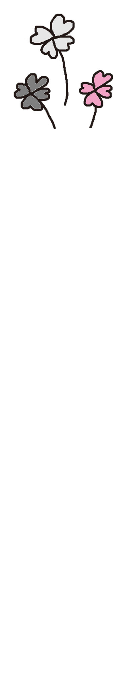
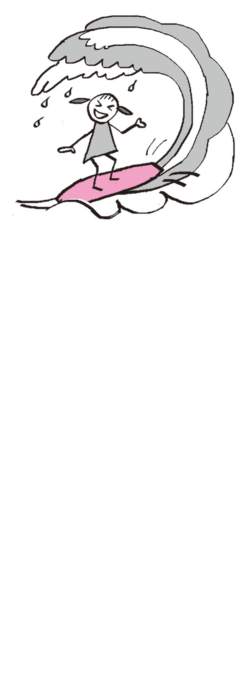
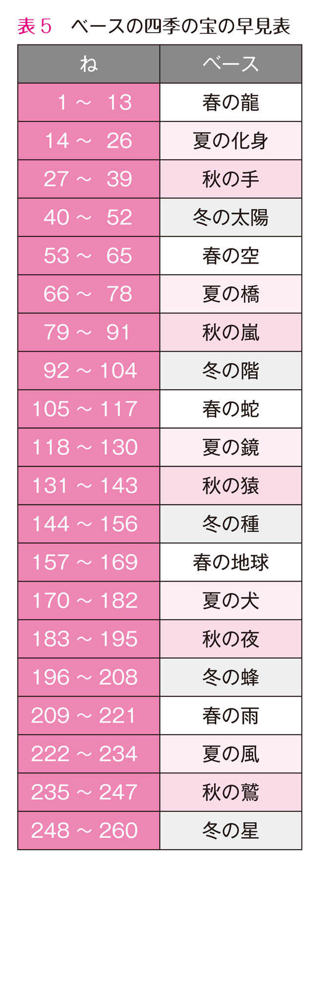
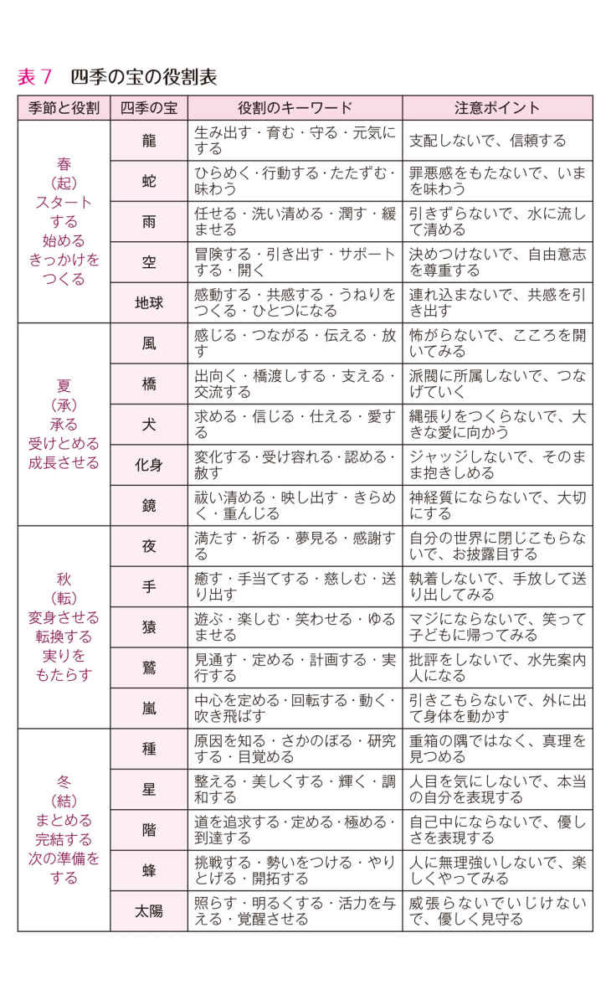

| あなたが生まれてきた本当の理由 | |
| 中繁 芳久 | |
| 株式会社評言社 (2015) | |
本書に掲載されているコンテンツの著作権は、著作権法により保護されています。
これらについて、著作権法で認められるもの、規約等により許諾が明示されているものを除き権利者に無断で転載・複製・翻訳・販売・貸与・印刷・データ配信（Ｗｅｂページへの転載など送信可能化を含む）・改ざん等する行為は、固く禁じられています。
まえがき
あなたは自分に嘘をつかないで、こころに正直に生きていますか？
本当に好きなことをやって、ラクに楽しく、人生を歩んでいますか？
あなたの深い魂の声を、こころから表現していますか？
この世界であなたにしかできない役割ってなんですか？
いままでの時代では、この答えにたどり着く人はごくわずかでした。
しかし、２０１２年の年末から、まったく新しい時代が始まりました。
あなたが本当のあなたらしく生きて、自分の役割を楽しみ、また、周りの人たちの役割を認めて受け容れて、お互いに自立しながら、共に助け合う時代がやってきたのです。
この本は、２万６０００年ぶりに始まった新しい時代のしくみを知り、あなたの本当の役割を見出すための入門書です。
自分の本当の役割を日々の生活のなかで実践すると、次第に不思議な偶然の一致が出現します。また、それが加速していきます。
まるで「宇宙」が後押しして応援してくれているような、なんとも嬉しくて懐かしく、ありがたく満たされた「磐石な安心感」が訪れてきます。
いままでの人生のなかで、「自分の生き方がわからない」「私はこの世に生まれてきたくなかった」「私は社会の不適合者だ」と思って生きてきた方は幸いです。
その「闇」のなかから、あなただけにしか体験できない素晴らしい「光」の人生が立ち上がってくるからです。
さあ、あなたも「新しい時代の新しい人生の風景」をいっしょに見てみませんか？
２０１５年春
中繁 芳久
目次 あなたが生まれてきた本当の理由
カバー・本文イラスト 中繁 芳久
この本は、あなたの人生がもっとラクに楽しくなるための生き方革命について、そのための「手法とセオリー」や「全国で触れ合ったさまざまな悩みの改善実例」と「いろんな体験」をお伝えするものです。
人生における４つの悩み
ぼくは、いままで全国行脚しながら、いろんな方々のカウンセリングをしてきましたが、そこである事実に気がつきました。
それは、「人の悩みや関心事はみな同じ構造とパターンでできている」ということでした。
人間の悩みの原因は、みなすべて、「その人の本来の役割が活かされていない」ところから始まっているのではないか、そして、その悩みはつぎの４つに分類できることがわかりました。
① 人間関係の不具合（夫婦・親子・会社・友人）
② 自分の使命や役割を知りたい
③ お金・仕事、生活経済の改善
④ 健康の改善（こころとからだ）
では、ちょっと試しにこの４つの代表的な悩みのパターンをのぞいてみましょう。きっとみなさんは、あれ？ これは自分のことをいってるの？ と思われるはずです。
みなさんの悩みは、どれに近いですか？
人間関係でよくある悩み、それは、夫婦関係、親子関係、会社の上司と部下のケースです。それぞれについては、後から詳しくお話しますが、ここでは夫婦関係を見てみましょう。
①人間関係の不具合──夫婦関係～あなたの奴隷はもうイヤよ症候群
あるご夫婦の話です。
ご主人は中堅企業のサラリーマン、仕事から帰ってきても会話はほとんどなく、テレビを観ながら酒を飲んで、出されたご飯を無表情で食べて寝るだけの繰り返し...。子どものことを話しかけてもいつもうわの空、悩みを相談してもうるさそうにしているだけ。
そのうち、ご主人は仕事が終わってもすぐ帰らなくなり、アルコールやギャンブルに溺れていく。家計は酒代やパチンコ代で消えていき、結局、奥さんもアルバイトしながら子どもたちの学費を捻出することに......という状況。
「私はこの人の召使いじゃないわ」
「私の結婚はこんなはずじゃなかった」
「なんで、この人は私のことわかってくれないの？」
「どうして、この人はこんなひどいことするの？」
「なんで私ばっかりが、こんなひどい目にあうのよ」
そんないらだちや不満、孤独や怒りが奥さんを襲い、ますますお互いの会話は疎遠になっていきます。子どもがいなければ別れることもできますが、子どもがいたり、生活力に不安のある主婦の場合は、じっと我慢の泣き寝入り生活になります。
このような状況の場合、普通なら、ご主人は間違っている、向こうに非がある、問題の原因は相手にある、それをどう改善するか？ という話になるはずです。
しかし、この本は裁判で旦那さんをどうやっつけたらいいかとか、効果的な慰謝料の取り方を伝授するものではありません。
相手を裁いたり、非を認めさせることで問題解決する方法は根本的な解決になりません。後から虚しくなるだけです。そんなやり方ではなくて、できれば、いままでと違った方法で夫婦関係や家族関係を改善することができたらいいと思いませんか？
本書ではこのような人間関係の悩みのヒントをお伝えしたいと思います。
②自分の使命や役割を見つけたい──人生燃えつき・ふと立ち止まり症候群
つぎは、とある地方の主婦の方の例です。
「私は48 歳の主婦です。いままでは子育てや仕送りに追われていた日々でした。それが、子どもたちがみな都会の大学に進学し、去年、いちばん下の子が就職して自立しました。主人は定年まで、まだ数年あります。最近は出張も多いみたいです。
以前は、やらなければならないことがたくさんありましたが、子どもたちが自立してからは、日々の時間に余裕が生まれてきました」
「最初はゆっくり休めることがうれしかったのですが、そのうち時間をもて余すようになり、家でぼーっとしているうちになんだか人生が虚しくなってきました。
いままでは忙しくてそんなことを考える余裕もなかったのですが、最近、私の人生はいったいなんだったのだろう？ って、考えるようになりました」
「私はこれから残りの人生をいったいどう過ごしたらいいんでしょうか？
私の本当の使命や役割はなんなのでしょうか？
私の本当の存在価値って、いったいなんなのでしょうか？」
人生、なにかに追われて忙しくしているときは気がつかないものですが、そのやらなければならないことから解放されてしまって人生にスキマができると、この世の春が訪れます。
しかし、その気分は長くはもちません。そのうち、なにかいいようのない「無力感」、社会から取り残されたような「孤独感」や「不安感」「あせり」が出てきます。
これは主婦だけではなくて、働き盛りのサラリーマンやＯＬの方にも当てはまるパターンです。突然、長年働いてきた会社が倒産したり、リストラで退職せざるをえなくなったときや、自分で会社を辞めたり、定年退職のときにも起こる症状です。
ぼくも、長年経営していた会社を手放したときに、同じことが起きました。
こんなとき、どうしていいかわからなくて、また忙しい人生に立ちもどり、何事もなかったように、元の生活習慣になる人もいますが、もう以前のような人生にはもどりたくないと決意を新たにする人もいます。
そういう人は、真剣に人生の本当の目的を探し始めるのです。
ほら、あなたにも似たようなことが起こっていませんか？
では、あなたの本当の人生の目的とは、あなたにしかできない、あなただけの役割とはいったいなんでしょうか？
本当のあなたの役割を見つけることができたら、人生はどれだけ充実するでしょうか。
のちほど、それもひも解いてみたいと思います。
③お金、仕事、生活経済の改善──仕事は辛くて当たり前症候群
つぎは仕事の話です。
みなさん、いまの仕事は楽しいですか？ いまの仕事は好きですか？
この質問をすると、多くの方はこう答えます。
「別に嫌いな仕事ではありませんよ」
でもこれは、いいかえるなら、「どちらかというと嫌いではないけれど、とくに好きでもない」という意味になります。
いまの仕事が好きで好きでたまらない、「きゃあ～ 毎日楽しい！」という人はほとんどいません。多くの人は「いまの仕事が好きなんだ」と頭で思い込んでいるだけです。
ぼくも企業向けの財務コンサルティングの仕事をしているときに、「いまやっている仕事は天職なんだ」と思い込んでいました。
でも、その仕事は以前に勤めていた金融機関の仕事の延長線上で、その業務や業界になじみがあり、手っ取り早くお金を生み出すことができるからでした。
本当に好きで好きでたまらない、大好きな仕事じゃなかったのです。
ぼくは本を読むのが趣味ですが、日経新聞もマネー雑誌も、仕事で仕方なく目を通していただけでした。いつも読んでいたのは「スピリチュアル系」や「宇宙」の本、雑誌は「インテリア」や「アウトドア」「ファッション」「クルマ」系でした。
本当に好きなものは、ずっとやっていても飽きません。
だから、当時はお金を稼いだり、使うことは楽しかったのですが、お金そのものが好きで好きでたまらなかったというわけではなかったのです。日経新聞や経済雑誌を読んで、涙を流すほど感動したことは一度もありませんでした。
五十代以降の人たちはむかし、つぎのように教育されて育ちました。
「仕事とは、好きなことや趣味の延長で行ってはならない。なぜなら、仕事とはもともと辛いものであり、辛い仕事をするからお金をもらうことができるんだ」
「楽しいことや好きなことは、まず生活が安定してお金の余裕があってこそできるもの。好きなことをやってお金が入るなんて、世の中そんなに甘くない」
「もし、将来好きなことを仕事にしたいと思っても、そのためにはお金がかかる。だから、いまはその資金を稼いで、将来に備えるためにも嫌な仕事でもがんばって蓄えるべき」
「いまの私はかりそめの姿、将来やりたいことをするための準備期間だから仕方がない」
そんなふうに自分にいい聞かせ、でも結局、気がついたら定年までその仕事を続けていた。たしかにお金は貯まったけれど、途中で病気になって人生を全うすることができなくなってしまった......なんてことはよくある話です。
好きなことやこころがラクになることを仕事にして、楽しく面白く、ワクワクしながら、お金も入ってくるし、人間関係もラクに豊かになる人生を歩むことができたら、みなさん、幸せだと思いませんか？
本当に好きで、楽しいことを仕事にして、身もこころも元気に豊かになる。
本当にそんなことが可能なんだろうか？
もしそれができるとしたら、どうしたらいいんだろうか？
これが、この本の最大のテーマです。
④健康の改善──人生の役割機能不全症候群
つぎは、健康の改善です。
いま、世の中ではたくさんの人が病気になっています。ストレスが溜まってガンになったり、過食に走って糖尿病やメタボになったり、不安や孤独でウツになって引きこもってしまったり、からだとこころの健康、そのバランスが損なわれてしまう人たちがたくさんいます。
病気になるのには必ず原因があります。
たとえば、飛行機が本来の役割である「空を飛ぶ」ということをしないで、潜水艦のように「海に潜った」としたら、これはうまく機能しませんよね。飛行機には海に潜るという機能が備わっていないから、不具合が出るのは当然です。
また、分厚くて堅くてどっしりとした重厚なテーブルが、本来の役割と機能に反して、窓際のひらひらのレースのカーテンになろうとしたら、カーテンレールはひとたまりもありません。もし、カーテンレールがもちこたえてくれたとしても、大きなテーブルがカーテンの代わりに窓にぶら下がっていたら、ちょっと怖いものがあります（笑）。
また、それを見ている人や支えている人たちにも心理的な圧迫感や違和感が生まれ、物理的にも大きな負担が生じます。逆に柔らかいレースのカーテンが、立派なテーブルになろうと一生懸命に努力しても、それはどう考えても無理があります。
無理とは「真理」が「無（な）い」ことです。
真理とは、そのものが本来もっている役割と機能が「真」に活かされる「理」（ことわり）のことです。
もしあなたが、からだに不具合が出てきたり、病気になっていたとしたら、それはひょっとすると「あなたはあなたの役割をうまく活かしていないよ」という、からだとこころからのメッセージかもしれません。
そのメッセージが伝えてくれている原因のほうには目を向けずに、結果のガンを切り取ったり、薬でそのメッセージを感じなくさせたり、病気そのものをやっつけようとするのではなく、役割の適合性のほうに目を向け、機能不全の元を改善していくことが大切なのではないでしょうか。
この本では、あなたがあなたのもつ本来の機能と役割を果たしていないと病気になることのしくみをお伝えします。そして、あなたの本当の役割・あなたにしか果たせない機能をひも解くためのツールもご紹介します。
この本の構成について
先にお伝えした４つの代表的な悩みの事例は、とても個人的なものに思えますが、これらはいま、世界中の人間に同時多発的、爆発的に起こっている共通の悩みなのです。
最近は離婚する人がかつてないほど増えています。また結婚しない人たちも増えています。医薬品をはじめ医療技術がこんなに進んでいるのに、おかしな病気になったり、ボケたりする人も急増しています。モノはあふれて、飛躍的に便利に、社会は安全になっているのに、自殺者が後を絶ちません。なにか変だと思いませんか？
また、ここにきて、「なにか世の中の流れが大きく変わったような気がする」という人たちが日本で急増しています。これはセミナーや講座に参加されている全国の女性のみなさんからよく聞く言葉です。
仕事のあり方、会社経営、経済、教育、医療、恋愛、結婚、家族......等の人間関係、
そして、人生のあり方や生き方も......。
なにか、社会がいままでと違う価値構造に変化し始めているような気がしませんか？
それはもしかして、世の中全体を取り巻いている「新しい時代の大きなエネルギーのうねり」が、私たち一人ひとりになんらかの影響を及ぼしているからではないでしょうか。
この本では、まず第１章 で、ぼくの個人的な人生失敗談と苦悩や葛藤の原因、そして、そこから生まれてきた問題意識と本書のテーマの関わりについてお伝えします。
第２章 では、「新しい時代の大きなエネルギーのうねり」の正体を宇宙的な視点から解き明かしてみたいと思います。
第３章 では、新しい時代におけるあなたらしい生き方について、そして、あなたの本当の役割を見つけるツールと、その使い方を解説していきます。
第４章 では、「本当の自分の役割」を発動させた方々の体験談を、また第５章 では人間関係を改善するための秘訣についてお伝えします。
第６章 では人間関係が改善した方々の体験談を、そして第７章 で自分の役割と周りの人たちの在り方を活かすポイントをいくつかお伝えし、第８章 でまとめをしていきます。
では、本編に入ります。

人生の目覚まし時計のアラーム
いま、世の中では、一見、不幸に見える出来事がてんこ盛りです。
でも、もしみなさんに、つぎのような出来事が起こっているとしたら、目覚めのチャンス到来の合図です。
① 離婚した。会社を辞めた（辞めさせられた）
② うつ、病気やケガ、事故などで、死を意識した
③ 大切な人、家族、ペットを失った
④ 不安や不満、怒りのなかで、だれかとなにかを争っている
⑤ お金や大切なモノがなくなった、奪われてしまった
⑥ 自分の価値を見出せず、孤独と不安の闇のトンネルにいる
ぼくは、10 年ほど前からこの６つの目覚まし時計のアラームが一斉に鳴り始めました。
当時、ぼくは東京で会社を経営していましたが、人間関係はガタガタで、妻のウツに続き、事業家だった義父の死、離婚、最愛の犬たちも３匹相次いで亡くなりました。
満員電車に乗って会社に行く理由や、お金を稼ぐことの意味や仕事の目的が次第にわからなくなりました。
救いを求めてさまざまな高額セミナーや自己啓発の勉強会、心理学、スピリチュアルなワークや勉強会にも山ほど参加し、ニューエイジ系の本もむさぼり読みました。いろんな素晴らしい先生について学びましたが、疑心暗鬼のなかで失望したり、人間不信に陥ったり......在家出家を目指したこともありましたが、答えは見つかりませんでした。
結局、人生でいちばん大切にしていた自分の会社を手放してしまい、仕事を辞めたぼくの存在価値は社会的にはなくなり、仲間や友人、取引先は去っていきました。
その後、新たな仲間たちといっしょに立ち上げた新しい会社も途中で空中分解。人間関係でもいろんな誤解を受けたり、貸したお金が返ってこなかったり、大金を落としたり......。からだもおかしくなりました。一度は復縁した妻でしたが、再び離婚となりました。
自宅も叩き売り、借金返済に追われ、収入も途絶えて世捨て人状態になり、社会のどこにも自分の居場所がなくなり、失意のなかで埼玉の奥地に引っ越しました。
クルマは事故続き、さらに交通違反が毎月続いたため半年で免停になりました。過去の固定資産税の追徴金がきたり、あらたな負債も背負うことになったり。独り暮らしのときに笑いを届けてくれた２匹の犬ともそれぞれ死に別れ、生き別れとなり、１年間で３回引っ越しました。
もう本当に泣きっ面に蜂の10 年間でした。そして、最終的には一度も住んだことのない、見ず知らずの遠い山口県に引っ越しました。
一難去ってまた十難くらいの感じで、最初は「なんでオレばっかりこんなに悲劇が起こるのだろう。ふざけんじゃない、悪いのは社会だ、あいつらだ！」といつも周囲に対し、怒りと不満でいっぱいでした。
そして、すべてを失い、世捨て人状態になってからは、今度は底なしの不安と孤独が襲ってきました。焦りと不安と無力感にプライドもへし折られ、疑心暗鬼と嫉妬のなかで、やるせない思いやジレンマに、ぼくの人生はズタズタになりました。
目覚まし時計はスヌーズにしていると、５分おきにアラームが鳴ります。
「そろそろ起きましょうという目覚めのシグナル」です。
目覚まし時計は、眠りにつく前に「自分でセット」します。絶対に寝坊しちゃだめなときにはスヌーズにして、さらに用心深い人は複数の目覚まし時計をセットします。でもつぎの日の朝は、目覚まし時計をついつい呪ってしまいます。
目覚まし時計は静寂のなかで突然、けたたましく鳴るのが通例です。気持ちよく寝ているときに、不快感やパニック感が襲ってきます。
だから、悲劇や不幸に思える出来事が何回も起きて、なにか大きな変化を余儀なくされるときは、人生目覚めのタイミングなのかもしれません。
ぼくは、過去世では眠りこけてしまうことばっかりだったのか、今世ではもう絶対に寝過ごしたくなかったのでしょう。本当にいっぱいの目覚まし時計が鳴りました。
いま、世の中ではたくさんの目覚まし時計が、あちこちでいっせいに鳴り始めています。
みんな、ぼくと同じ状態なのかもしれません。
そう、それが２０１２年12 月21 日のマヤの予言です。
長かった冬眠の時代から、いよいよ人類全体が目醒めるときがやってきたのです。
本当の自分の役割に目覚めようキャンペーン！
この夜明けは、２万６０００年に１回しかない千載一遇、いや万載一遇の大チャンスです。ぼくはこれを、《本当の自分の役割に目覚めようキャンペーン！》と呼んでいます。
方位磁石の赤い針は、さえぎるものがなければ、自然とＮ極を指します。Ｎ極とは〈あなたのこころが自然に向かう、あなたの本来の役割の方向性〉のことです。
Ｎ極のＮは、ニュートラルのＮ。
本来のあなたのこころが目指す方向は楽しくて、ラクで、軽やかで、自然です。
つまり、あなたが生まれてきた本来の目的に向かって、あなたにしかできない役割を表現する生き方にシフトするということです。
このキャンペーンは地球に住んでいる人なら、だれでも、もれなく参加できます。
７つの奇跡
みなさんが本当の自分の役割に目覚めて、自分の使命がわかり、本当の自分を表現できるようになってくると、つぎの７つの奇跡が起こってきます。
① なぜか人生がトントン拍子に、楽しく軽やかになります
② いつのまにか病気が治り、こころもからだも健康に若返ります
③ 必要なときに、それに見合ったお金が入ってきます
④ こころからわかり合える人間関係や伴侶に恵まれます
⑤ 自分に、そして周りに感謝できるようになります
⑥ なにか目に見えない力に導かれて守られるようになります
⑦ 生きがいが生まれて、人生がときめいてきます
ね、なんだかとってもワクワクするでしょ？
みなさん、布団のなかで惰眠をむさぼって、グズグズ寝ている場合じゃないですよ！
このキャンペーンの参加資格
おっと、大事なことをいい忘れていました。
このキャンペーンに参加するためには、お金も資格も会員登録もいりません。でも、つぎの２つがないとキャンペーンには参加できません。
① 素直さ
② 勇気
たったこれだけです。
たとえば、先ほどの７つの奇跡を見て、「そんなうまい話、あるわけないよ」と思った人は、すでに素直さがない状態なので、最初からキャンペーン参加資格を失っています（笑）。
また、自分の役割を果たすということは、こころの思うままに、「我がまんま 」に生きるということに目覚めるということですが、これは長年慣れ親しんできた布団に見切りをつけ、そこから一気に起き出すようなものなので、かなり勇気が必要になります。
本当の自分の役割に目覚めるためには、さまざまなしがらみ、つまり葛藤 を手放す必要があります。
葛藤とは葛 や藤 の枝がもつれあって絡む状態のことですが、方位磁石の針にいろんなものが絡んでいると、針はＮ極に向くことができません。
こころの磁石の針が、スーッと自然にＮ極に向くためには、針に絡みついている自分のなかのとらわれや価値観、こうあらねばならないというこだわりや思い込み、慣れ親しんできた思考習慣や常識のクセをいったん全部「リセットする」必要があります。
新しい時代への追い風を帆に受け、本当の自分がいる世界へ船出するためには、さまざまな葛藤を手放すことがとても大切です。
そのためにはまず、自分の葛藤としっかり向き合うところから始めなくてはなりません。そこに向き合うのはとても怖い感じがしますが、じつは葛藤の原因は意外に取るに足らない些細な出来事だったりするものです。
葛藤があると同じパターンを繰り返す
小さいときの些細な出来事が原因になり、人生に葛藤が生まれるという事例について、少し長くなりますが、ぼくの体験話をさせてください。
いまとなっては笑い話ですが、以下はぼくの人生の闇の部分です。四十数年、ぼくの人生を裏で支配していた「闇＝葛藤の正体」についてです。
ぼくは、30 歳過ぎから45 歳ぐらいまで、東京都内で企業向けのファイナンシャル・プランニング、すなわち財務コンサルティングの会社を経営していました。
当時、ぼくは自分の会社でいつも同じパターンを繰り返していました。
それは、営業スタッフが必ず１年で会社を辞めてしまう（本当は辞めさせてしまうんです）という現象でした。なかなか会社に定着してくれる人材に恵まれませんでした。
会社を始めてから10 年目の頃、突然、国税局が会社に乗り込んできて、査察を受けたことがありました。
「世間相場より高い給料を払っているのに、従業員が毎年１年で会社を辞めるわけがないだろ。きっとこの会社は架空の社員を雇っていることにして、架空名義の口座を毎年変えながら、そこに給料を振り込んで所得をごまかしているに違いない」という脱税疑惑でした。でも、ほんとうにスタッフを雇って給料を払っていましたし、もちろん在籍していました。
疑惑は白でした。
当時、ぼくはお金にとっても執着のある人間でした。だから、自分でもお金を稼ぐために人一倍努力しました。でも、ぼくはいつもその「大切なお金」を新しく入社したスタッフに大盤振る舞いしてしまうクセがあったのです。
懐の大きい立派な社長だという評価を受けたいがために、給料は本人が欲しいという申告の金額（世間の相場より高い金額です）を支給していました。本音では、他人に大切なお金を払いたくないのに、ましてやまだその本人の実力もよく知らないのに、かっこうつけていちばん執着のあるお金を先に払う約束をしてしまうのです。
入社後、最初はにこやかに対応していても、やがて、努力もしないで、仕事に精を出さないで、成果が出ない給料泥棒のスタッフを見ていると、だんだんムカついてきて、次第によそよそしく冷たくしてしまい、最後にはバサッと切り捨ててしまうのです。
「有給欲しい？ そんなことしている場合か、お前はもっと努力すべきだろう」
「たくさん給料もらっているのに、どうしてお前はいつもそうなんだ！」
「なんで契約が取れないんだ」
「どうしてお前はダメなんだ」
「だからいったじゃないか！」
「悔しければもっと稼いでみろ！」
堪忍袋の緒が切れると、社員をズタズタに切り裂いて、追い込んで辞めさせるパターンを繰り返していました。
社員を退職させることで、いったんは気持ちが収まるのですが、そのあとに強烈な自己嫌悪が襲ってきます。で、また本人に優しい言葉をかけるのですが、これがまたさらなる人間関係の悪化をもたらし、葛藤を引き起こすことになりました。
どうしていつも、自分がいちばん欲しいものを他人に渡そうとするのか？ なぜ、同じパターンを繰り返してしまうのか？
当時は自分でもよくわかりませんでした。悪いのは社員のほうだと思っていましたし、自分だけは正しいと思っていました。
葛藤の原因は幼少期にあった
じつはその葛藤は、幼少期に起きた日常的なささいな出来事が原因だったのです。これに気づくのに苦節40 年かかりました。
ぼくは、山口県の宇部市というところで生まれました。
父と母はそれぞれ小さいときに親を失ってしまったので、２人とも親戚の家で育てられました。だから２人は両親からの愛情をいっぱい受けることができませんでした。
そんな似たような生い立ちをもつ２人が、お見合いで結婚して、初めて生まれた子どもが、ぼくでした。
両親は初めて本当の家族ができて、とてもうれしかったのでしょう。だから、ぼくはとても大切にわがままに、過保護に育てられました。
父は住宅メーカーに勤めていて、転勤族でした。ぼくが３歳からは島根県の松江で暮らしました。松江は自然が豊かで神秘的な場所でした。
ぼくは小さいときから霊感めいたところがあって、町で透明人間が運転しているクルマを目撃したり（笑）、宍道湖 のほとりで、ものすごい大きな光の玉が空を横切るのを見たり、お寺やお墓に行って、お化け探しに明け暮れていました。
星を見るのがことのほか好きで、大人が読むようなむずかしい天文学の本の写真を見ながら、いつも月や火星や土星に思いをはせて、そこにはどんな世界が広がっているのだろうと期待に胸を膨らませ、未来を想像しながら、将来は絶対に「宇宙飛行士」になるんだって、いつもみんなにいいふらしていました。
また、ぼくは当時、バームクーヘンが死ぬほど好きでした。
ある日、母が百貨店で大きなバームクーヘンをワンホールで買ってくれました。もうルンルンで家に帰って食べられると思ったら、それが大間違い。そのままクルマで山口県の親戚の家に行くことになっていたのです。
ぼくはクルマのなかで上機嫌で「バームクーヘン」の箱を見ながら、鼻歌まじりで想像を巡らせていましたが、やっと親戚の家に着いたときに悲劇が起こりました。
なんと玄関先でその宝物のバームクーヘンが親戚のおばさんに渡されてしまったのです。あの大きなバームクーヘンは親戚の家への手土産だったのです。
「きゃあ～ ぼくのぼくの、ぼーっくのバームクーヘン、だめ～!! 」と、箱を抱きかかえてダダをこねたのですが、そのとき、母はぼくにこういったのでした。
「おばちゃんにバームクーヘンあげなさい。あなたはもうすぐお兄ちゃんになるんだからね、大人にならなきゃだめでしょ！」

そのときに、素直なぼくはこう思いました。
「ああ、大人って、いちばん欲しいものを我慢して人に渡さなければならないんだ」
そして、「ぼくは立派な大人になることを父母に望まれているんだ」
そう思ったのです。
それ以来、ぼくは父母が喜んでくれるなら、そうしなければならないと思いました。でも、頭の理解とは裏腹に、腹のなかではその悔しさと虚しさが暴れまくっていました。
ぼくの無意識の心の石盤には、次のオキテが十戒のように深く刻まれたのです。
・ 汝、自分がいちばん欲しいものは、決して受け取ってはならぬ
・ 汝、立派で良い大人になることが、人生でいちばん大切である
それからは、自分の本音がいえなくなりました。
いちばん欲しいものは人にいってはならない。もし、自分が手にした場合は決して受け取ってはならない。
欲しいという行為は卑しいこと、それを我慢しなければ大人にはなれない、本音をいうことは立派な良い大人がすることではない、と思うようになりました。
その思い込みのオキテは、ゆがんだこころをつくり、ひどい反抗期をつくりだしました。
「欲しいけど、いらない」
当時、ぼくはよくこの言葉を使っていました。
その反抗期にあきれた両親は、ぼくをお寺に連れて行き、祈 祷 してもらったり、おまじないの水薬も飲まされたりしました。そんなことしてもぼくの気持ちはおさまらないのに......と、ぼくの深い意識はそのことをクールに見ていました。
その思いをわかってもらいたくても、わかってもらえない切なさや孤独感から、ずっと大切にしていた宝物の鉄砲のおもちゃを泣きながらコンクリートに叩き付けて壊したりしたこともありました。
こころの葛藤があまのじゃく的な破壊行為になったのです。
そんな折、妹が生まれて幼稚園の年長組に上がる頃のことでした。父がまた転勤になり、今度は遠い北の国の新潟市に引っ越しすることになったのです。
大好きだった幼稚園で送別会があり、みんなが寄せ書きや絵を描いて渡してくれました。そのときに憧れだった女の子がくれた寄せ書きに、こんな言葉が書いてありました。
「よしひさくんは、いつもうちゅうひこうしになりたいって、みんなにいってたけど、やっぱりむりだとおもいます」
このひと言は強烈なメガトンパンチでした。
ほかの子のメッセージはまったく覚えていません。でも、その言葉だけは脳裏に深く深く刻まれました。
素直なぼくは「ああそうなんだ、彼女がいうんだから、それは正しいに違いない」と思い込んでしまったのです。
ぼくはエイプリル・フール（４月１日）の生まれなので、小さい頃から学年でいちばん年少でした。小さいときは背も小さく、周りのみんなについていけなくて、何をしてもうまくできませんでした。女の子たちのほうが、ぼくよりも大きく強く賢かったのです。
だから「女性のほうが男より優れている」と思っていたため、憧れのあの女の子がいうんだから絶対間違いないと、このメッセージをしっかり受け容れてしまったのです。
これがぼくの人生の第３のオキテとなり、心の奥深くの石盤に追加で刻まれました。
・ 汝、自分がいちばん欲しいものは、決して受け取ってはならぬ
・ 汝、立派で良い大人になることが、人生でいちばん大切である
・ 汝、自ら望む者には決してなれぬ、また、なってはいけない
このときも、本当は大好きだった松江を離れたくありませんでした。
「引っ越したくないよ～」と泣きながらダダをこねました。でも、父の転勤なので願いは聞き入れてもらえるはずもなく、やっぱり自分の望みはあきらめなければならないというオキテがさらに強固になりました。
劣等感と優越感のはざまで
ぼくは引っ越し先の新潟市で小学校に入学しました。
両親は、ぼくがいい成績をとるとすごく喜んでくれました。
「いい子だね、よくやったね、お兄ちゃんは賢いね」と褒められるとうれしくなりました。
親に褒めてもらえることで、ぼくがこの世の中に存在することを許してもらえるような気がしたのです。逆に親の期待にこたえられない自分になったとき、自分はこの世の中に存在する価値がなくなるような気がしました。
だから、親に認められ、社会に認められる立派な大人になるために、お利口にいいつけを守り、聞き分けのいい子を演じて、小中学校時代は学級委員や生徒会の役につくような優等生を演じていました。
しかし、本当の自分は不良タイプだったので、いつもこころの奥底には不満や怒りが充満していました。この欲求不満が思春期になってから、得体の知れないドス黒いマグマとなって爆発・噴火し始めます。
それからは、身内には「外ヅラは良くて内ヅラはわがまま、本音をいわない天邪鬼 」といわれるようになります。でも、わかっちゃいるけど、それは良い大人になるために無意識に深く刻まれたオキテだったので、やめようにもやめられなかったのです。
親の期待にこたえて入学した高校は県下一の進学校でしたが、中学校のように厳しい制服規定や身なりのチェックはなく、自由なバンカラ校風だったので、そこでお利口仮面の緊張感が完全に緩んでしまいました。
そのうち、ボートの部活に明け暮れるうちに、授業にぜんぜんついていけなくなり、数学や化学などの理数系は赤点の連続、中学までは優等生だったぼくは、いきなり劣等生に脱落しました。
そのきっかけは高校１年、数学の授業でのことでした。
先生にあてられて、前に出て黒板の数式を解かされたぼくは、まったくチンプンカンプンで、チョークをもってボーッと（ボート部だったので）たたずんでしまいました。
そのときに先生は、みんなの前で眼鏡をあげながらこういったのです。
「中繁、問題になりませんね」
先生は「こんな問題ができないようじゃダメだ」という意味でいったのでしょうが、ぼくはまるで「ぼくの存在自体が問題にならないくらい価値がない」といわれたような気がしたのです。先生がクラスのみんなの前でつぶやいたこのひと言は、ぼくがいちばんいわれたくない言葉でした。
このときの恥ずかしい思いは想像を絶するものがありました。自分の人格や存在をみんなの前で否定されたような激しいショックを受けました。
こうして、みんなの前で赤恥をかかされるという体験が「立派な大人になれていないという劣等感」や「存在の否定」というトラウマになり、のちの自分に深く禍根を残してしまいました。
この事件で理数系がガタガタになったぼくは、もう宇宙飛行士の夢どころか、学校の授業にはまったくついていけず、かわりに芸術関係の道や海外に行くことばかり夢見ていました。部活も受験ということで３年の春にやめてしまい、悶々と過ごす毎日が続きました。
さらに追い打ちをかけるように、翌年は初の共通一次試験導入で、苦手科目があると不利になるレギュレーションが導入され、理数系がダメなぼくは、あえなく受験戦争に惨敗します。
進学校の高校を卒業したのにこんなはずはない、東京の予備校で１年間ちゃんと勉強して、私立文系に切り替えれば絶対に偏差値の高い大学に入れると、親を説得して上京させてもらったものの、あこがれの都会生活にワクワクして遊び呆けてしまい、結局、志望校には入れず、入学できた大学の学部は経済学部でした。経済学部を選んだのは就職活動に有利だったからで、興味があったからではありませんでした。
高校に入るまでは勝ち組優等生の優越感、高校に入ってから大学受験では負け犬の劣等感のなかで自分の存在価値を見失い、悶々とした葛藤が続きました。
大学の都会的な校風にもなじめず、授業はさぼり、再受験の勉強をしながら、地方出身の肩身の狭さを払拭するためにブランド品の服を買いたくて、アルバイトに明け暮れていました。
みんながうらやむような一流企業に就職し、高い給料と高級スーツに身を固め、霞ヶ関や丸の内を闊歩するようなエリート官僚や会社員になることで、自分の生まれてきた意味と価値を世の中にアピールすることができると思っていましたが、大学受験で失敗したぼくには、もうそれが不可能のような気がして情けなくなりました。
一方で、魂が喜ぶようなロマンのある仕事に就いてみたいという気持ちも芽生えてきました。大学では経営学の組織論のゼミに入っていましたが、そのゼミは「人間の学としての経営学」を教えてくれる、大学でも異端の有名なゼミでした。そこで人間とはどう生きるべきなのかということを学んだぼくは、さまざまな問題意識をもつようになりました。
ぼくはむかしから乗り物が大好きでした。世界一速い車やバイクをつくる男のロマンの物語が大好きで、ある有名自動車メーカーの創業者スピリットに感化されて、どうしてもこの会社に入りたいと思い、熱く門を叩くも、ここでも学歴の差別を突き付けられ、就職活動はあえなく撃沈。不条理な世の中の制度に怒りがこみ上げてきました。
結局、先に内定していた大手のノンバンク金融機関に敗者復活で拾い上げてもらい、大阪で社会人デビューしました。でも正直いって、金融分野にはまったく興味がありませんでした。
しかし、入社した会社は若い力をどんどん登用してくれるアグレッシブな社風でした。当時としてはかなり実力主義志向の会社だったので、ナニワ流の商いの基本やさまざまなビジネスのオキテ、テクニック、処世術など先輩たちからいろいろ学ぶことができました。
その会社の仕事は、やりがいもありましたし、実力主義というところが気に入っていましたが、28 歳のときにヘッドハンティングされ、もっとほかの世界も見たくなって転職したのでした。
ところが、転職した会社は思っていたイメージとはだいぶかけ離れていて、紆余曲折の末に退職。東京にもどり、いっしょに転職した先輩たちと節税を目的にした保険ビジネスの会社を立ち上げました。
世の中はちょうどバブルで景気もよく、節税ニーズは高くて、商売は大繁盛しました。
当時、ぼくにとってビジネスの目的とは、かっこよくお金を稼ぐことでした。若くして会社を立ち上げて、みんなから社長と呼ばれ、ビジネスでお金を稼ぎ、いい車に乗っていいスーツを着るということは、社会から「スゴいね」と認められる行為だったからです。
その後はバブルがはじけ、節税のニーズは減りますが、当時はまだだれもやっていなかった企業向けのファイナンシャル・プランニングに目をつけ、業態を切り替えたところ、時代の流れのなかで会社の実績と信用力はアップしていきました。
社会的に信用のある税理士や会計士、大手金融機関とタイアップして、企業の役に立つ仕事をして稼いで、世の中から認めてもらえることは、ぼくのこころのなかのオキテにもかなう方向性だったからです。
「欲しいものを手に入れられて、立派な大人として認めてもらえるなら、とことんやってやる」
初めて自分のなかで本音と建前が一致できる世界を見つけることができたのです。
これは、いままでの人生の劣等感の憂さ晴らし、受験戦争で惨敗した恨みに対するリベンジでもありました。
当時は、お金を稼ぐことが生き甲斐で、とにかくリッチになって自分の地位と名誉を拡大することしか考えていませんでした。
ぼくは、いつもまわりからの評価を気にしていたので、コンサルタントとして賢そうに振る舞い、知ったかぶりを装い、仕事ができるビジネスマンをめざし、表面的には立派な経営者、幸せな結婚生活を演じながら、仮面の取り繕い人生を歩んでいました。
そして、人に負けたくなくて、馬鹿にされないように武装しているうちに、いつのまにか子どものときのような純粋さはなくなり、感動して泣いたり、腹の底から笑ったりということが次第になくなっていきました。
強い男は絶対に涙なんて見せないもの、感情を見せるのは男の恥だと思っていました。
とにかく周囲から「すごいね」とか、「若いのにたいしたもんだね」といわれたくて、一生懸命に仕事に明け暮れていたのです。
目覚まし時計のアラームが鳴り始めた！
立派な大人になりたかったぼくは「本当のぼくの役割」を封じ込め、たくさんの時間とお金、エネルギーをじゃじゃ漏れにしながら、世の中に対する「反発」と「怒り」を原動力にして、ただ馬鹿にされたくない一心で、ビジネスを憂さ晴らしの対象にして生きていました。
自分が本当にやりたいことは考えたこともなく、あったとしても封印して、本音をいわず、仮面の自分を演じ、愛想笑いを繰り返し、偽りの結婚生活、偽りの経営者、偽りの人生を四十数年送ってきた人間だったのです。
だから、最初にお話ししたように、本音をいえずに、新しいスタッフにたくさん給料を払うことを繰り返していたのでした。
怒りのエネルギーは、安定的ではありませんが、とってもパワフルな実現力をもっています。おかげで人並み以上の生活や地位や名誉も手にすることができ、表面的には勝ち組に入れたと思って生きてきました。
そんな絶頂のとき、セットした目覚まし時計のアラームが相次いで鳴り始めました。
会社・家・家族、社長という肩書き、地位・名誉、仕事の実績や社会的な信用......。
ぼくという大人の人間が、人に負けたくなくて、いちばん大切にしていたすべての有形・無形の財産を（その執着とは裏腹に！）、みずから全部リセットしてしまいました。
本当に不思議なのですが、なぜそんな心境になったのかは、いまもよくわかりません。なぜか、こころの底から突き上げるような衝動に駆られて、あと先を考えずに自分でもビックリするぐらい潔く、ほとんど無償で会社を手放してしまいました。
会社を手放してからは、毎日、後悔の日々でした。自暴自棄になったり、自分の居場所を見つけようと、もがけばもがくほど溺れてしまう毎日の繰り返し。
いままでは怒りと不満を叩きつけるように仕事をし、お金を稼ぐことで憂さ晴らしをしていた戦いの土俵から、突然、離れ小島に島流しされたような感覚でした。社会不適合者の烙印を押された人の気持ちが、初めてわかりました。
最初にお話しした、小さいときのささいなバームクーヘン事件の笑い話が、自分の深層意識のなかで大きな心理的なブロックになっていたことに気づいたのは43 歳のときです。
犬たちの病気の治療でお世話になった動物病院の先生に連れて行ってもらったインドの聖者サイババのアシュラム（ヒンズー教の修行道場）、そこでの不思議な体験や気づき、また別の南インドの聖者の学校で21 日間行った瞑想や呼吸法、ヒーリング、インナーチャイルドワーク（傷ついた幼少期の自分の声を聞くワーク）を何年か繰り返すなかで、ようやく思い出した出来事でした。
それまでぼくは、この幼児体験のことを無意識のパンドラの箱のなかに完全に封印していたのです。
宇宙飛行士のリベンジは今世のうちに実現できる......といまでも本気で思っていますが、バームクーヘンのほうは手っ取り早く敵討ちできる（笑）ので、その事実に気がついた10 年前に、近くのイトーヨーカドーに行って大きなバームクーヘンを買い、一人きりで食べてみることで、積年の願いを叶えました。
で、誰もいない自宅の居間で、バームクーヘンを独り占めして食べてわかったことは、「大きなワンホールのバームクーヘンは１人で食べ切れない」ということでした（笑）。
最初はなんかうれしくて涙が出てきましたが、半分食べたら飽きてしまったのです。
ほかの人にとってはたかがバームクーヘンでしょうが、されどぼくにとってバームクーヘンは特別なものでした。たった１つのバームクーヘンが、ぼくの人生を左右する力をもっていたことに、思わず苦笑しました。
バームクーヘンを食べて気がついたことは、「自分が満足すると、人にも気持ちよくお裾分けしたくなる」ということでした。
そこからぼくの新しい人生がスタートしました。まずは自分が欲しいものは、欲しいと認める。そして、それを表現し、こころから味わってみるということを始めました。
きっとぼくの魂は、人からどう評価されるかという見せかけの砂上の楼閣人生ではなく、自分が本当に心地よい生き方ができるよう、自分の深い魂の声に根ざした本音の生き方にシフトしたかったのでしょう。
会社を辞めて、すべてを手放すことに対して、ものすごい葛藤、不安や恐怖がありましたが、それ以上に、とにかく一度、人生をまっさらにしてみたい衝動のほうが勝っていたのです。
でも、さしたる支障もなく、人生１８０度の方向転換ができたのは、なにか目に見えない力のサポートがあったからだと思います。また、そのわがままを受け容れてくれた会社のスタッフや家族のみんな、友人、取引先の方々など、そのお陰でいまのぼくがあります。
でも、当時はそんな気持ちにはなれませんでした。
バームクーヘン事件のトゲが抜けてから、この10 年間、本当の自分の生き方や役割を探し求めて、世界中を巡りました。
「目に見えるもの」や「お金」による損得勘定でしか価値判断しないビジネスの世界に限界を感じ、それとはまったく真逆な「目に見えないもの」や「精神的、霊的なスピリチュアル」の世界に救いを求めて、あちこちに出向き、たくさん勉強しました。
いかがわしい偽物もたくさんありましたが、本物の先生もいました。いろいろな先生について多くを学びました。
しかし、ビジネスとスピリチュアルな世界のどちらにも、真実の答えは見出せませんでした。どちらの世界も、「力で支配する人」とそこに「依存する人・すがる人」の構造・関係性は同じでした。
ビジネスの世界は、お金や地位や名誉で人を支配・コントロールし、スピリチュアルな世界は、摩訶不思議な超能力で人を支配・コントロールしているということがわかったからです。支配は依存を生み出し、依存は執着を生み出します。
自分には足りない「なにか」を得るために、「どこか」の団体に所属し、「だれか」を崇拝し、「なにか」に依存することで「お金」を払わす〝しくみ〟がそこにはありました。
どちらの世界にも、真の自立を促し、それをこころから応援するものはありませんでした。その世界からどうやって抜け出すことができるか、それがぼくの人生における大きな課題でした。その答えを求めて、ぼくはずっと試行錯誤を繰り返してきました。
とくにこの数年間、ぼくは暗い闇の真っただ中にいました。
希望と絶望、出会いと別れ、信頼と裏切り、愛情と支配、賞賛と嫉妬、怒りと孤独、疑心暗鬼・人間不信、焦りと不安、自信喪失......。
本当にいろいろなことがありました。死にたくなるような出来事もたくさんありました。
ぼくはなんのために生まれてきたのか？
これからなにをしたらいいのか？
いったい、どこに向かって行ったらいいのか？
ぼくの生まれてきた理由はなんなのか？
この答えはなかなか見つかりませんでした。
闇は夜明け前がいちばん暗いといいます。
でも、闇があるからこそ光が現れます。
そんな自問自答するぼくの生き方に、かすかな光の方向性を与えてくれたのが、８年ほど前に知人が紹介してくれた《現代版マヤのツオルキン暦 》でした。
このツオルキンという体系は、アメリカの故ホゼ・アグエイアス博士がマヤ文明にゆかりのある高次の存在から受けとったメッセージでつくられた宇宙情報です。
不思議なことに、ツオルキン暦を初めて見たとき、なぜかとっても懐かしい感じがしました。まるでむかしからこの体系を知っていたかのような、不思議な感覚があったのです。
当時、マヤ暦を勉強していた人たちは、２０１２年の12 月21 日に世の中が滅びると思っていた人が多かったのですが、ぼくはその日から新しい世の中が始まるような気がしてなりませんでした。
「ひょっとして、ツオルキンの体系を伝えてきた高次の存在が本当に伝えたかったのは、世界が滅亡するということではなく、新しく訪れる時代の到来と、そこから始まる人類の新しい生き方の示唆だったんじゃないのか？」
あるとき、そんなインスピレーションが、突然、降りてきたのです。
そこから、ツオルキンの暦をもとにして、新しい時代の正体と新しい時代の生き方をいろいろと探求し始めました。
研究を重ねるうちに、ツオルキン暦と日本の神道や日本の文化・伝承には不思議なシンクロがあることがわかりました。双方のベースとなる哲学や世界感、背後に隠れている深いメッセージに不思議な相関関係が見つかりました。
20 と13 の聖なる数字の意味や、自然界の移ろいや天体の運行、宇宙のリズムを観察し、それをベースにした円の暦の考え方など......。
そして、マヤ暦を日本の伝統や文化と融合させながら、独自に研究・発展させることを思いつき、それを深めていきながら、自分自身の生き方を探求していきました。
やがて迎えた２０１２年の12 月21 日、予想どおり、そこから世の中のエネルギーが変わっていきました。その理由や現象にはあとで触れますが、３・11 以降、いままで「支配と依存」の構造をもっていた組織は、だんだん立ち行かなくなってきました。
まるで固かった氷が溶けだすように、融解が始まってきたのです。
２０１２年12 月21 日以降の新しい世界
これからは、みんなが自立する時代です。一人ひとりが主役になります。
そして、自立した人たちが、お互いに助け合って、活かし合っていく世界が始まります。
私たちの先生は「だれか（人）」ではなく、「自然」であり「宇宙」です。
そのことがわかったのは、東京から離れて、山口県に引っ越してからでした。豊かな自然や大地、広い大空や海、山や川、そして太陽や星や月が、その真理を教えてくれました。
２０１３年の節分、長い試行錯誤のすえ、ぼくはようやく自分の生まれてきた理由、そして役割を見出すことができました。
ぼくの役割、それは「よみがえりアクティベーター」。
よみがえりアクティベーターとは、ぼくの造語で、一般的な言葉ではありませんが、その意味は「その人が本来もっている力（役割）を見出し、起動スイッチをオンにして、その人の人生がよみがえるように加速させるサポーター」のことです。
一人ひとりが自分の役割に目覚めて、ラクに楽しく自立できるように元気づけ、モチベーションを高めて活性支援すること。
一人ひとりの人生がときめいて、ワクワクする人生が発動する起爆剤になれたら、ぼく、幸せです。
これが、ぼくにしかできない役割です。
いま、ぼくはこの仕事が好きで好きでたまりません。
毎日、ワクワクしています。
みんなの人生が本来の役割に目覚め、ときめく瞬間を見ると、本当に涙が出るくらいうれしくなります。
本当にやりたいことを、勇気をもってやり始めると、不思議な奇跡が起こります。
人生がいったんボロボロになったぼくのような人間でも、再び元気によみがえることができました。
また、そんな失敗から学んだ闇の体験があったからこそ、その体験から学んだことをお伝えし、それを仕事にして、全国のみなさんとたくさんの喜びを分かち合えるようになりました。
10 年前までは、自分の体験が本になるなんて、思ってもみませんでした。
でも、ぼくは好きで楽しいことをずっとやってきました。この本が世の中に出るということは、奇跡の力がみんなにも起こり始めているという証拠です。
さあ、いよいよ本当の自分を発動する黄金の時代がやってきました。
あなたもいっしょに、あなたの人生を表現しましょう。
そして、みんなで新しい時代の新大陸に移住しましょう。
● よくある質問コーナー その❶
好きで楽しいことして、身もこころも元気に、経済も豊かになるって本当なの？
はい、本当です！ ２年前から宇宙がそれをどんどん後押ししてくれています。
でも、ちょっと信じられません。 その理由やしくみを教えてください。
本書がその入門編です。わかりやすく書いてあるので、ぜひ読んでみてください。
もし、それが本当なら、具体的にどうしたらいいんですか？
怖いかもしれませんが、こころの声にしたがって毎日を自分らしく暮らすことです。そして、結果を先に決めつけないで、宇宙にお任せすることです。
自分らしく生きるって、どういうことなのか、正直よくわかりません。
この本では本当のあなたの役割を見つけるためのユニークな手法を紹介しています。全国のみなさんの体験談はすべて実話ですので、参考になると思います。
宇宙はくるくる回っている
私たちの宇宙は、回転運動しています。
宇宙の進化とは回転、展開していく永続的なプロセスです。
地球は回転（自転）しながら、太陽の周りをくるくる回転（公転）しています。他の太陽系の惑星も同じです。そして太陽系も銀河系の中心の周りをぐるぐる回り、さらにその銀河系も渦になりながら回転しています。
宇宙は、小さな回転が大きな回転の一部となって組み込まれていきながら、さらに大きな回転をつくっていき、それが次元を超えて永続的に展開していきます。
むかし、この多次元の宇宙の円運動プロセスを観察して、これを体系づけていた人たちがいました。
古代マヤの人々です。
２０１２年12 月21 日、世界中の人たちが世の中の終わりだと大騒ぎしていたあのマヤ暦ですが、本家本元のマヤでは、その日、人類は滅亡するのではなく、２万６０００年ぶりに新しい時代に突入するという見方をしていたようです。
マヤの暦は、宇宙や自然のリズムを正確に観察してつくられた、複雑な円運動の組み合わせによるカレンダーラウンドの体系ですが、これは宇宙的な視点に意識を置かなければ理解できない構造なのです。
４つのプロセスを経て回転する地球
マヤの長期暦では、２万６０００年のサイクルのことが述べられています。この２万６０００年の周期とは、地球の歳差運動とほぼ一致していて、この周期は、地球の自然や文明に対して大きな影響をもつといわれています（図１ 地球の歳差運動のプロセスをごらんください）。
地球の地軸は真っすぐではなく23 ・４度傾いているので、ちょうどコマが首振り運動をしているような動きをしています。ちょっとわかりにくいのですが、地軸の傾きは23 ・４度に保たれながら自転していて、その地軸の向いている先端の方角（北）が、ぐるっと一周回転するのに、約２万６０００年かかるといわれています。この円運動のことを「歳差運動 」と呼びます。
いまは地軸の向いている北極の方位に北極星がありますが、歳差運動とともにどんどん北極星は移り変わっていきます。いまから１万２０００年後には、なんと、こと座のベガが北極星になってしまいます。いまは当たり前の私たちの常識も、どんどん移り変わるのです。
春分の日に太陽が昇る方向（春分点）の方位の星座が、魚座から水瓶座にシフトするという話もこの歳差運動が元になっています。
占星術でいう新しい時代の到来、「アクエリアス（水瓶座）の時代 」というのは、この運動による春分点の移動を表したものです。
また、宇宙の円運動のプロセスは「起・承・転・結」の４つの順番で展開していきます。インドでは「起」を創造・「承」を維持・「転」「結」を破壊のプロセスと呼び、現代版マヤ暦ではこれを赤・白・青・黄の４つの色で表します。
「図２ 宇宙の円運動のプロセス」をごらんください。私たちは日本人なので、このリズムを四季、すなわち「春・夏・秋・冬」の運動に置き換えてみると、とてもわかりやすくなります。
春は始まり＝スタートです。日本の春は入学式や新学期、田植えの季節です。
夏は成長・鍛錬です。春に植えられた苗は梅雨や日照りの中で鍛えられ成長します。
秋は転換・変容・実りです。木々は紅葉して変容し、作物は収穫されます。
冬は１年のまとめ、サイクルの完結です。次の春の準備期間でもあります。
１年の春夏秋冬のリズムは起承転結となり、ぐるぐる回る円運動で成り立っています。
宇宙はミクロからマクロまで、同じパターンの円運動を繰り返しています。
１年の春夏秋冬の四季のリズムは、先ほどの２万６０００年の歳差運動のサイクルにも反映していきます。小さな円の回転運動が、より大きな円の回転運動のなかに組み込まれていくのです。
ということは、地球は約６５００年ごとに起・承・転・結のリズムが循環していくことになります。
世の中は「冬（結）の時代」から「春（起）の時代」へ
よく、中国４０００年の歴史といいますが、古代文明はその頃スタートしているので、いまの私たちは冬（結）の時代に生まれてきた人類ということになります。
冬（結）の時代しか体験してきていない人類はこれからもずっと寒い冬（結）が続くと信じていますが、もしもマヤ暦が示しているように、２０１２年12 月21 日が２万６０００年ぶりに訪れた春分の日だったとしたら、すでに世の中は春（起）の時代に突入していることになります。
この歳差運動の回転をマラソン競技にたとえるならば、１万３０００年ごとに折り返し地点がやってきます。前半と後半の１万３０００年ではまったく逆のベクトル（宇宙の風向き）になることがわかります。そして現在は、この折り返し地点を迎え、新しい時代が始まったところです。
これを四季のエネルギーの移り変わりと月の満ち欠けのプロセス、呼吸のプロセスと重ねて対応させてみると、さらに面白いことが見えてきます。
「図３ 歳差運動と呼吸・月・四季のプロセス」をごらんください。
いままでの１万３０００年間は、季節でいうならば秋から冬の時代であり、月の満ち欠けでいうならば新月から満月に向かうゾーン、呼吸のリズムと円運動をマッチさせるなら、これまでは息を吸い込む時期だったことになります。
今回の折り返し地点（２０１２年12 月21 日の臨界点）は月の満ち欠けでいうなら満月です。人間の呼吸でいうなら精一杯息を吸いこんで、もうこれ以上吸い込むことができない臨界点です。
これからの時代は満月が新月に向けてドンドン欠けていくプロセスに移行します。呼吸でいえば、ゆっくりと息を吐き出すプロセスに突入したわけです。
では、冬の意識場から春の意識場に移行するということはどういうことでしょうか？
注 ：ここでいう冬とか春というのは氷河期とか温暖化という気候のことではなく、意識場の流れ、地球のエネルギー場の流れととらえてください。冬は結（まとめ）のエネルギーであり、春は起（はじまり）のエネルギーです。日本は四季の国なので、四季の言葉を当てはめると、イメージしやすくなります。
閉じた世界から開いた世界へ
〈冬＝閉ざされた意識場〉
「図４ 冬の時代」の世界の風景をごらんください。
みなさん、もしも氷点下の冬に外で一夜を過ごせと命令されたらどうしますか？
外は不安や危険がいっぱい、冷たくて寒くて食べ物もありません。だから、まずは暖をとれる安全で安心な場所と、食べ物の確保に専念するはずです。できることなら不測の事態に備え、暖かい毛布や服、食料、燃料、もちろんお金もできるだけいっぱいストックしたほうがより安心です。備えがあって、温かくて快適で、外の脅威から守られている内側の世界は安心なので、当然意識は内側に向きます。
安全で安心できる、大きくてどっしりとした安定感のあるシェルターはみんなが殺到するので、そこに入るためには競争が生まれます。その競争に打ち勝つためには学歴が必要不可欠となります。できるだけ知識を詰め込んで暗記し、努力と根性で受験戦争に頑張らなくてはなりません。立派な会社に入り、立派な家庭をつくり、たくさんの財産を所有することは勝ち組として評価されるので、地位や名誉も手にすることができます。
いつも、まだ足りないという強迫観念に追われながら、必死に勝ち負けの競争に専念すると、二極化が加速していきます。
その結果、内側と外側は２つに遮断され、つながりが途絶え、個が強まり、さらに分離が加速していきます。
このように、冬の時代は内側に向かって意識が閉じていく時代となります。
では、暖かい春の時代がやってくると、私たちの生活はどう変わるでしょうか？
〈春＝開かれた意識場〉
「図５ 春の時代」の世界の風景をごらんください。
雪や氷はゆるんで溶けて春の小川になり、草木も芽吹いて新緑でいっぱい、桜の花や菜の花も咲き始め、にわかに色めいてきます。
外には青空が広がり、太陽もポカポカと暖かくなってきます。もう外は危険ではなくなりました。
明るく楽しく暖かくなったことに気づき始めた人たちは、カーテンを開け、窓や扉を開けてさわやかな風を感じ、次第に外に出ていきます。
最初はおっかなびっくりですが、慣れてくると服も軽くなり、活動的になります。勇気をもって外に出て行けば、タケノコや山菜も採れ、旬の新鮮な野菜も手に入ります。
外は安全で楽しくて、いのち豊かな気持ちのいい満ち足りた空間になりました。
春からは内側と外側の境界線が曖昧になり、すべてがオープンにつながり始めます。
みんなの意識は外へ向き始め、ハイキングに出れば、桜の木の下で楽しい花見が行われ、それぞれ持ち寄ったお弁当やお菓子、飲み物などを広げてお互いにふるまいながら、楽しい交流が始まります。
これからはすべてが開いた世界に変化し始めます。意識は開いて外に向かい始めます。
「表１ 冬と春の時代の世界観比較表」を見てください。冬の時代から春の時代へ移行すると意識が変わってくるので、さまざまな生活スタイルや価値観が一変します。それを比較表にしてみました。この表は先ほどの図３～５ と合わせて見ていただくと、より明確にイメージがわくと思います。
たとえば、なぜ多くの若者たちが安定的・固定的な就職先に興味がわかないのか？ なぜお金や地位や名誉がモチベーションにならないのか？
彼らは自分の気持ちに正直に生きることができる本音の世界を求めているからです。
いくら社会的に認められている大企業だったとしても、自分の気持ちに嘘をついてまで、努力や根性で頑張って人と競争して、何かを所有したり、安定を求めるということには意義を感じていないのです。
冬の時代は、不足と不安の時代でしたから、どうしても安定を求めるために、お金が中心になってきました。だから、まだその時代が続いていると信じている人には、周りの世界は「まだ冬のまんま」に見えるのです。
でも、すでに春の時代の到来を感じている人たちは、「もう世の中は春になった」ように思えるのです。こういう人たちは、はっきり説明できないし、まだ確証はないものの、なにかいままでとは違う、満たされている感覚がわき出ているので、一心不乱に自分を犠牲にしてまで、あくせく働く気になれないのではないでしょうか。
この差は、現状社会に対する「両者の認識の違い」からくるものでしょう。
いまはまだ、三寒四温を繰り返しながら、方向性が見えないカオス状態が続いていますが、あと、２～３年もすれば、かなりはっきりとした春の気配が見えてくると思います。
表１ の各項目についてのイメージ根拠については、「図６ 四季と水の三態のプロセス」をごらんください。
ひと言でいうならば、氷（固体）から水（液体）への変容、「液化現象（融解）」が、社会のあらゆる側面に浸透し始めているのではないでしょうか。
冬の間はガチガチだった氷が、春には溶け始めて水になり、どんどんゆるんでくる現象が起こっているのです。固体的な氷の意識が溶け始め、水になってどんな器にも形を変え、柔らかく、そしてしなやかに、すべてが流動的に変化し、つながっていく意識へ変わっていくのです。
春の時代は、子どもたちの時代です。
子どもたちのテレビ番組を観ていると、新しい時代の最先端の息吹を感じることができます。たとえば、仮面ライダーです。
むかしの仮面ライダーは、モノトーンの世界でたった１人で悪に立ち向かいました。
素性を隠して秘密裏に変身し、努力と根性でだれにも頼らず、すべてにパーフェクトな主人公がシリアスにマジモードで戦っていました。つまり、「冬の時代の仮面ライダー」は固体モードでした。
ところが、最近の仮面ライダーったら、びっくりするくらい明るくてカラフルで、おちゃらけノリで、まるで喜劇ドラマです。みんなが見ている前で平気で変身するし、主人公はスキだらけでどこか抜けています。いろんな個性をもつ仲間が、優劣なく役割を補完しあいながらお互いに助け合っていくチーム・プレー・ストーリーなのです。
ちなみに、いまの仮面ライダーはいろんなオプション・アイテムを使って、さまざまな姿形に変化していきます。カラダも機能も１つではないのです。これぞまさに「春の時代の仮面ライダー」、すべてにおいて流動性のコンセプトが貫かれています。
２０１４年の春には、正義の味方の仮面ライダーが昭和と平成チームに２つに分かれて戦う映画が公開されていましたが、これは冬の時代と春の時代のカオスを表しているようでちょっと意味深でした。この映画、どちらのチームを勝たせるのか、視聴者からの投票で決まったらしいのですが、結果は僅差で平成ライダーチームの勝ちだったそうです。
アイドルの世界も変わりました。むかしは、山口百恵のように、歌も踊りも芝居もすべて１人で上手にこなすのがアイドルの絶対条件でした。しかし、いまではＡＫＢ48 とか、ＥＸＩＬＥやＳＭＡＰ、嵐など、それぞれのメンバーが、それぞれの得意なことに特化して、苦手なことはグループでお互いに助け合うスタイルに変わってきたのです。
これからは「固かった氷」がどんどん「水」になって溶け出していきます。
この社会的変化は、地球規模での大きな宇宙の回転エネルギーの流れ・プロセスなので、人間はしたがうしかありません。
絶対に○○であるべきだという時代から、○○でもいいかも、というように「価値観の多様化」が始まり、「多様性を認め合いながら、お互いに助け合い、溶け合って１つに融合する」時代へ変わります。
私たちがこの地球の上で生きていくならば、逆らいようがない変化の潮流です。
では、これから私たちはどう生きていったらいいのでしょうか？
新しい時代に逆らわない生き方
その答えは、シンプルです。
時代の波に逆らわないということです。
宇宙の全体にゆだねるということです。
ルールが変わったことを素直に受け容れて、
その大きな波に乗るのです。

６５００年続いた冬の時代は、「不安」がベースとなっていたので、「安全・安心」の確保、すなわち、お金を稼ぐことが最優先となり、競争が生まれました。
生き残るためにはいい学校に入学し、立派な会社に就職し、出世して勝ち組になることが必要な時代だったのです。仕事は辛くて厳しいもの、お金や地位や名誉のためには努力と根性と忍耐が必要でした。
自分の本音をいったり、好きなことや楽しいことを仕事にするのはもってのほか、まずは安全・安心の確保のため、辛くても我慢して頑張って、せっせと蓄えをしてきた人が成功できたのです（イソップ物語の「アリとキリギリス」の寓話が冬の時代の象徴的な教えです）。
冬の時代では自分の思うように物事が進まないことへの怒り、競争社会のなかでの挫折、孤独や嫉妬、言葉に表せない不安や自分らしく生きられないことへの不満......さまざまな屈折したネガティブな感情が、人類の集合意識として堆積されてきました。
これは、冬の時代においては、ある種、当然の帰結でした。地球のゆりかごに生かされている人類にとっては逆らえない環境であり、こうするしか選択の余地はなかったのです。
しかし、時代は、新しい春の６５００年に突入しました。これからは、不安ではなく、「安心・安全」がベースの社会になります。
そう、すべての価値観・ルールが逆転し始めたのです。
ですから、いち早く地球の新しいサイクルに気づき、新しい春の時代に合わせた生き方に切り替えていくことが大切です。
これを「意識の衣替え」といいます。
意識の衣替え
季節が冬から春に変わるとき、日本の各家庭では「衣替え」をします。
私たちはいままで毎年の四季のサイクルを何十回も体験しているので、この衣替えを自然に行ってきました。なんの執着もためらいも不安もなく、当たり前のごとく重たい服を脱ぎ捨て、軽やかな服に衣替えをします。
衣替えはすがすがしくて気持ちいいものです。
でも、６５００年ごとに大きな四季のリズムが循環していることに気づいている人はほとんどいません。ですから、冬の時代しか知らなかったいまの人類にとって、これから移行する春の時代は、「誰も知らない人類未到の真っ暗な世の中」に見えるのです。
もし私たちが２万６０００年以上生きることができるならば、６５００年ごとの「起・承・転・結」のエネルギー変化を、四季の移ろいのように、身をもって体感・比較ができるので、意識の衣替えが容易にゲーム感覚でできるようになるでしょう。
しかし、残念ながらそれは不可能です。
せっかく、永年築き上げてきたものを、執着なく手放せといわれても、それは大変むずかしいことです。
この意識の衣替えは、冬の時代でいろんなものを封じ込めて頑張ってきた人たちにとっては、かなりハードルの高いチャレンジになるでしょう。
まずは
①宇宙のルールが、呼吸でいうなら、吸い込む流れから、吐き出す流れに切り替わったことを素直に受け容れ、
②狭いとらわれの世界から大きな広がりの世界に目を向けて、
③いままでの既成概念やエゴの構造を手放して、
④意識を軽く・柔軟にして、開いて・拡大すること、
が大切なのです。
※ 意識の衣替えをすすめるためのワークについては、のちほど第８章でお伝えします。
〝これからはすべてがつながっている〟ことを思い出す時代へ
いつの時代も、宇宙のエネルギーは、地球を、そして私たちを普遍的に照らし満たしてくれていました。しかし、いままでは、分厚く色のついたコップのなかに永年遮断され、閉じ込められてきた意識だったので、私たちはそのことにまったく気がつかなかったのでした。
しかしながら、冬の時代が悪かったといって、非難や否定をしているわけではありません。冬の時代は、春の時代に移行するためにはどうしても必要な自然のリズムであり、冬がなければ春は生まれませんでした。
宇宙には善・悪はありません。
善・悪とは、人間がいままでの囲まれた世界のフィルターでつくり出してきた、固定概念や常識というマインドゲーム（幻想）の産物です。
起・承・転・結＝春・夏・秋・冬のプロセスは宇宙のリズムであり、役割の変換です。
これは、終わることのない「普遍的な永遠の美と調和の流れ、循環・回転のサイクル」なのです。
春の時代に意識が移行し始めると、いままで固体化していた意識がゆるんで溶けて、解き放たれてくるので、私たちは宇宙のなかですべてがつながっていたことを徐々に思い出してきます。
すると、だんだん不思議なシンクロや、ありえない奇跡が頻繁に起こり始めてきます。なぜなら「宇宙の根源の無限なる英知」と私たちの意識が、つながり始めるからです。
そのためには、冬の時代の集合意識がもたらす頑固な「分離習慣（ジャッジ・葛藤）」を手放すことが大切です。そして、私たちの意識を大きく、深く拡げていくのです。
ここで大事なことは、私たちは宇宙に生かされている存在であったということを思い出し、「不安感から来る損得勘定」や「コントロール」を勇気をもって手放すことです。
そして、「心の直感」にしたがって、「素直」に、また「自分にしかできない役割」を見つけて、同じ方向を目指す「仲間と助け合い」ながら、「ラクに」「楽しく」生きることなのです。
では、あなたの本当の役割を果たして、ラクに楽しく生きるためにはどうしたらいいのでしょうか？ 次章ではそれを探ってみたいと思います。
本来の自分を取りもどすチャンスがやってくる
「さあ、自分らしく生きていいですよ～」
「これからはあなたの本当の役割を果たしてくださいね～」
と、いきなりいわれても、「はい、わかりました」って、そうは簡単にはいきません。
だって人類は６５００年の間、ずっとガチガチの氷の冬の時代のなかで、自分を守って社会を築いてきたわけですから、そのオキテをおいそれと手放すことはできないはずです。
冬の時代のオキテとは、つぎのようなものでした。
① 人に迷惑をかけないで、全部１人でやらなければならない
② 嫌なこと、苦手なことも努力して、克服しなければならない
③ 他人に助けを求めるのは、恥ずかしい行為である
④ 働かざるもの食うべからず
⑤ いつもきちんと、ちゃんとしなければいけない
たとえば、先ほどの序章の２番目の話、子育てから解放されたお母さんの例のように、きちんとちゃんとしなければならなかった役割から解放されたときに「自分の使命や役割を知りたくなる」というのは、とても自然な現象なのです。
これからは、いままでの冬の時代のなかで「○○すべき」だった状況が、どんどん解けてくる出来事が次々と起こってくることでしょう。
無理になんとかしなくても、固かった冬のオキテが自然にゆるんで溶け始めてくるので、本来の自分を取りもどすチャンスが日に日に増してくるのです。
大切なのは、その世の中の流れに逆らわないことです。
そして、本当のあなたの役割を早く見つけ出すことです。
これからの時代は、おそらく「本当の自分の役割を見つけるサポート支援」、すなわち、「あなたが本当のあなたらしく生きるためのライフスタイル導入サポート支援」事業が一大産業になると思います。ぼくの役割は、その産業を楽しく活性化させることです（笑）。
あなただけの役割と機能を見つける〝こころの暦〟
ここで、大宇宙の生命の役割（構成要素）を２６０通りの「役割と機能」で読み解く、とっても面白いツールをご紹介します。第１章でお話ししましたが、ぼく自身が自分の生まれてきた目的や役割をひも解くために、紆余曲折のすえに編み出した、あの現代版マヤ暦のツオルキンをベースにつくり上げてきた体系です。
これは、あなたにしかできない「役割と機能」をひも解くための気づきを促してくれるツールで、〝こころの暦〟といいます。
〝こころの暦〟は、冬の時代から春の時代に移行するための、水先案内ツールです。
このツールは、ツオルキン暦をもとに、伊勢神宮に伝わる神道の伝承、古代から伝わる哲学・思想、日本独自の四季の文化や神道の教えなど、さまざまな伝統的な叡智を現代風にリミックス＆アレンジし、２０１２年12 月21 日から始まった新しい春の時代の生き方をサポートする統合的な意識変容ツールとして、マヤ暦２・０→和観２・０→こころの暦という流れで８年の歳月を経て、バージョンアップしてきたものです。
宇宙共鳴の叡智をもとに、「四季の宝」と呼ぶ20 の生命（役割）エネルギーと、「宇宙の波」という13 の運動（機能）エネルギーを用いて、２６０通りのバリエーションの組み合わせのなかから、あなたの本来の資質「ね」をひも解いていきます。
本来のあなたの役割や機能に気づき、自分をゆるして認めて、表現していく。
そして、一人ひとりの音色がオーケストラのハーモニーのように、宇宙の共鳴現象となり拡がり、つながっていく。
それを、何度も何度も繰り返しながら、頭ではなく、五感で体験・体得していく。
こころの暦の重要なテーマは、まずは自分が自分らしく生きるということ、その実践を通じて、周りの人たちも自分らしく生きられるように、お互いの役割を認め合い、支え合うことなのです。
つまり、金子みすゞさんの詩にあるように「みんなちがって、みんないい」ということを受け容れるための体系です。
これを「多様性の承認＝ダイバーシティ 」といいます。
こころの暦は、人間評価のためのアセスメント・ツールや占いではありません。アセスメント・ツールとは、個人の能力や特性を評価するために、その人の性格や気質、興味や価値観、能力やスキルを測る検査のことです。
また、占いのように、いいとかわるいとか、運勢や未来を予言・評価・判断したり、なにかを決めつけたり、依存を生み出したり、恐怖や不安感をもたらすものでもありません。
これは、あなたの深いこころの奥にある「魂の羅針盤」、本来のあなたの「役割」を表すコンパスの真北の方向性を見出していくための手法です。
こころの暦──あなたの本当の役割を示す彩音表
表２ の「彩 音 表 」（巻末資料として大きな版を別に収載しています）をごらんください。
これは、人間の役割と機能を表す周期律表で、宇宙エネルギーの役割の相関関係を表すひな形です。元素記号の周期律表のようなものです。
宇宙でいのちを授かった生命体は、すべてこの表のエネルギーのなかの１つの役割を担って生まれてきたという考え方です。
私たちはみな、
宇宙オーケストラの楽団員の一員なのです。
２６０種類の異なる役割をもった
楽器によるフルオーケストラなのです。
一人ひとりが違う楽器を奏でながら、
お互いの役割を果たして調和すると、
すばらしい交響曲となります。
いろんな楽器の音色が融合することで、
素晴らしいハーモニー、
まさに宇宙交響曲が生まれます。
あなただけの役割ポジション「ね」（Ne ）
それでは、早速、あなたの宇宙オーケストラの楽器と役割を調べてみましょう。
あなただけの役割を表すポジションのことを「ね （Ne ）」といいます。
「ね」とは、あなたという神聖なる楽器の「音」色、あなたのルーツである「根」っこ、Ne＝Natural Energy（あなたの自然な真北Ｎ極のエネルギー）の意味でもあります。
「ね」は、西暦の生年月日で求めます。
「表３ ね算出早見表」（巻末資料として別に収載：彩音表の裏面）を見てください。
〈「ね」の数字の求め方〉
生年月日を西暦にします。和暦しかわからない場合は、早見表の変換で西暦にします。
「ね算出早見表」から、求める生年月日の西暦の数字を見つけて、その行のいちばん右端にある黄色の数字をメモします。→ ①
今度は、月日の表から求める生年月日の「月日」の欄を見つけ、青色の該当数字をメモします。→ ②
①と②の数字を足した合計数が、求める「ね」の番号となります。ただし ①と②の数字が２６１以上の場合は、その数字から２６０を引きます。
（例：合計数が２９６になった場合 →「ね」番号は２９６－２６０＝36 となります）
※ 注意事項
・ 「ね」の数字は１～２６０ の番号のいずれかになります。
・ 出生日と戸籍届出の日が異なる場合は、出生日のほうで計算してください。
・ うるう年の２月29 日生まれの人は、２月28 日で計算してください。
「ね」の読み解き方①──準備編
「ね」の番号がわかったら、まず表２の「彩音表」からみなさんの番号の場所を探してください。じつは、みなさんの「ね」は、「四季の宝」という２つのエネルギーの組み合わせによって構成されます。
この彩音表は、宇宙の聖なる綾織のタペストリーのようなものです。
タペストリーは、経糸（タテイト）と緯糸（ヨコイト）で紡がれています。その経糸のほうを「表現の四季の宝」と呼び、緯糸のほうを「ベースの四季の宝」と呼びます。
これら２つのエネルギーが合体・融合して、あなただけの役割が表されます。とっても簡単なので、まずはその２つの四季の宝を見つけてみましょう。
①「表現の四季の宝」の求め方
まずは「表現」の四季の宝からです。
あなたの「ね」の番号を彩音表から見つけ、その番号の列を上に上がっていくと、あなたの「表現の四季の宝」がわかります。
たとえば、ね２１７ の人は、彩音表で「ね」番号を見つけて上に上がっていくと、「春の地球 」になります。また、ね48 の人なら「冬の星 」、ね７ の人なら「秋の手 」、ね１ の人なら「春の龍 」になります。
この20 種類のシンボルで表された四季の宝は、春夏秋冬の４つの季節に分類されます。そして１つの季節にはそれぞれ５つの異なる役割のシンボルがあります。
②「ベースの四季の宝」の求め方
本来は彩音表から求めていくのですが、簡単に確実に見つけるために、「表５ ベースの四季の宝の早見表」を使って調べていきます。

たとえば、あなたの「ね」が１～13 ならば「春の龍 チーム」、ね 14 ～26 ならば「夏の化身 チーム」、 27 ～39 は「秋の手 チーム」となります。
ベースの四季の宝のチームは全部で20 チームに分類されます。１チームは13 の表現の四季の宝をもつメンバーで構成されます。
通常は表現とベースは異なる四季の宝となりますが、13 人に１人の割合で、表現とベースが同じ四季の宝になる人もいます。
③天のね──「ね」の数字が○で囲まれているところ
「ね」の数字が○で囲まれている場合は「天のね」と呼びます。
この日は宇宙のエネルギーがダイレクトに降りてくる日で、その日に生まれた人は四季の宝がタフな仕様になっています。クルマにたとえるならば四輪駆動仕様、時計でいうなら防水・防滴仕様になっているようなものだと思ってください。
彩音表を四角い家の部屋に対応させるなら、部屋の四隅には大きな通し柱が、また真ん中には大きな梁や筋交いがありますが、ちょうどその位置に「天のね」の○が配置されているのがおわかりでしょう。
大きな力がかかる場所には、それを支える構造が必要になります。
２６０個の「ね」のなかで、「天のね」は52 個、これはちょうど全体の20 パーセントにあたります。
「天のね」になっている人は、しっかりと自分の役割を発動させる必要があります。
④宇宙の波
彩音表のご自身の「ね」の数字の上を見てください。何やらお団子やお皿の形をした不思議なマークがついていますよね。
これを「宇宙の波」といいます。宇宙の波は13 種類です。
表現とベースの四季の宝の組み合わせが、みなさんの「ね」のブレンド、ハーモニーとなり、みなさんの役割を表してくれるのですが、宇宙の波は、その機能を表します。
つまり、表現とベースの２つの四季の宝の組み合わせ方、またそのブレンドのポイントや、使い方のヒントなどを教えてくれるのです。宇宙の波の使い方についてはあとで実例をあげてお伝えします（次ページの「表６ 宇宙の波の機能」）。
これで、①表現の四季の宝、②ベースの四季の宝、③天の「ね」になっているかどうか、④宇宙の波、 がわかり、準備が整いました。では、つぎにいきましょう。
「ね」の読み解き方②──表現とベースと波
ちょっとおさらいをかねて、実例で試してみましょう。
例：坂本龍馬 １８３６年１月３日生まれ
・ 表３ の「ね算出早見表」から、西暦１８３６年→38 １月３日→57 38 ＋57 ＝95
「ね」を計算すると、「ね＝95 」となりました。まず、彩音表で95 を見つけ、表現の四季の宝を確認します。95 の番号の列を上に上がると「秋の鷲 」が出てきました。
・ 次は、表５ を使ってベースの四季の宝を調べると、95 は「冬の階 （きざはし）」チームでした。
・ 龍馬の「ね」の 95 は○で囲まれていないので、天のねではありません。
宇宙の波は、彩音表で 95 の上にある波のシンボルを見ると、お団子４つなので「波４（安定） 」となります。
これらの基本要素が出たら、つぎのように表してみます。
坂本龍馬 ね95 秋の鷲（表現） 冬の階（ベース） 波４安定
ね、なんだか、日本の唄会のお題目の短冊みたいで、ちょっと雰囲気が和のテイストでステキな感じでしょ？
表現とベースの四季の宝がわかったら、まずは表４ の「四季の宝の世界観」から、「秋の鷲 」と、「冬の階 」の世界観を見ていきます。
どうですか？ この２つの四季の宝を読んでいくと、なんとなく龍馬の人生の役割のイメージが浮かび上がってくるような気がしませんか？
※ 補足 この「四季の宝の世界観」のそれぞれの解説の最後に出ている「ホームポジション」とは、みなさんの「意識の視座」「みなさんの立っている世界の場所」「居心地のいいホームグラウンド」のことを表しています。
四季の宝の世界観でイメージをふくらませたら、こんどは表７ の「四季の宝の役割表」を見て、つぎのように書き出してみましょう。

あ、そうそう、「宇宙の波の解説」もいっしょに調べて書いてみてください。
坂本龍馬 ね95 秋の鷲（表現） 冬の階（ベース） 波４安定
表現 →秋の鷲
〈季節の役割〉 秋＝（転） 変身させる、転換する、実りをもたらす
〈四季の宝の役割〉 見通す、定める、計画する、実行する
ベース →冬の階
〈季節の役割〉 冬＝（結） まとめる、完結する、次の準備をする
〈四季の宝の役割〉 道を追求する、定める、極める、到達する
波４ → 安定 立ち位置を決める、計測する、定める、自分の尺度をもつ
だんだん、龍馬の人生の役割が具体的になってきました。さあ、いよいよ、四季の宝の「表現」と「ベース」の組み合わせについて解説します。
「ね」の読み解き方③──表現とベースと波のハーモニーを感じてみる
こころの暦は、「みなさんがこの世に生まれてきた理由」や、「みなさんの人生の役割」「みなさんにしかできない使命」をひも解いていくためのツールです。
それを、２つの四季の宝「表現」と「ベース」、さらに「宇宙の波」を組み合わせることで読み解いていきます。もちろん、それぞれは１つずつ調べていってもオッケーですが、こころの暦のいちばん楽しいところは、この３つのエネルギーの組み合わせにあるのです。
ちょっと、次のイラストをごらんください。
みなさんがよく食べている寿司のイメージです。ここで、「ベースの四季の宝」はシャリの部分です。「表現の四季の宝」はニギリのネタです。そして「宇宙の波」は醤油です。
寿司はなんといってもシャリがベース（基礎、土台）です。これがしっかりあって、つぎにネタによってさまざまな味（13 種類）に表現されていきます。さらに、この寿司の味を引き立たせて、ベースと表現の役割がうまく成り立つように補完してくれるのが、ちょいと付ける醤油です。
これら寿司を構成する３つの要素にはそれぞれ役割があります。シャリにはシャリの、ネタにはネタの、醤油には醤油の役割があります。それぞれは単独でも食べられる食品ですが、お互いが自分の役割を果たしながら、いっしょにチームとなって助け合うと、とてもいい味を出してくれますよね。これと同じように、ベースの四季の宝、表現の四季の宝、宇宙の波のエネルギーをうまく使うとすばらしい働きができます。
これが、３つのエネルギーの組み合わせ、ハーモニーです。
ということで、もう一度、龍馬の人生の役割を解析してみましょう。
坂本龍馬 ね95 秋の鷲（表現） 冬の階（ベース） 波４安定
龍馬のベースの四季の宝は、「冬の階 」です。冬の階 はひと言でいうなら「求道者」です。自分の道を探し、真理の道に向かって、寒い冬の日に長い階段を一歩ずつ踏みしめながら上っていきます。
冬の季節の役割は、「まとめる」「完結する」「次の準備をする」とあります。３００年続いた徳川幕府の時代を完結させ、長州や薩摩や土佐をまとめ、新しい時代に向けての準備は、自分が何をすべきかを追い求めていくという姿が見えてきます。
表現の四季の宝は「秋の鷲 」です。四季の宝の役割からは、鷲は「見通す」「定める」「計画する」「実行する」......秋という季節の役割からは、「転換」「変身させる」「実り」が出てきました。
秋の鷲 は、澄んだ高い空から新しい時代の方向性を見定め、目的を設定して、そのための計画を立て実行する役割です。まさに古い時代を新しい時代に変容させる力があります。
宇宙の波は「４安定 」です。「物事を計測」し、「自分の立ち位置を決める」「定める」とあります。龍馬は諸国を旅して、多くの師から教えを受けます。そして最終的には脱藩して、自らのポジションを定めるのです。
真理の道を追求し、極めていきながら、高い視点から新しい時代の行く末を見定め、自らの立ち位置を決めて計画を練り、時代の先駆けとなって、その突破口を開く改革実行者。
どうですか、龍馬の人生の役割が見えてきませんか？
いかがでしたか？ 〝こころの暦〟は、とても自由度が高いツールなので、「みなさんの生まれてきた理由」については、いろんな読み解き方が可能になります。
なお、表８ で主な著名人の四季の宝を表にしてみましたので、参考にしてください。
※ ここであげているのは、「表現の四季の宝」です。
たとえば、春の地球には歌手が多く、夏の橋には政治家がたくさんいます。また秋の鷲は顔の彫りが深く鼻筋が通っている人、冬の星には芸術系の役割の人が多くなっています。なんとなく雰囲気や世界観が似ているグループになっているような感じがしませんか？
みなさんも好きな著名人や気になる有名人の「ね」をいろいろと調べてみてください。
ぜひ一度（できれば何度も！）、ゆったりとした時間をつくって、みなさんの人生の役割や使命について、自分自身を掘り下げてみてください。

第３章では、あなたの本当の役割を見つけるための手法についてお伝えしました。限られた紙面で、またセルフワークだけでは、なかなか自分だけに備わる役割を見出すことはむずかしいことかもしれません。ぜひ全国のみなさんたちといっしょに、あなたの本当の役割を見つけるワークショップにご参加ください。
本当のあなたの役割が発動すると、本来の機能がラクに楽しく活かされてくるので、不思議なことが起き始めます。
冒頭にあげた、「本当の自分の役割に目覚めようキャンペーン」、７つの奇跡です。
もう一度、おさらいしてみましょう。
① なぜか人生がトントン拍子に、楽しく軽やかになります
② いつのまにか病気が治り、こころもからだも健康に若返ります
③ 必要なときに、それに見合ったお金が入ってきます
④ こころからわかり合える人間関係や伴侶に恵まれます
⑤ 自分に、そして周囲の人に感謝できるようになります
⑥ なにか目に見えない力に導かれて、守られるようになります
⑦ 生きがいが生まれて、人生がときめいてきます
じつは、少しでも早くこの奇跡の仕組みを解説したくてうずうずしているのですが（笑）、みなさんにこの宇宙からのキャンペーン・プレゼントを十二分に活用していただくためには、まずは論より証拠です。
ということで、さまざまな具体的な体験事例を（全国から）ご紹介します。
ここに登場するみなさんは、こころの暦の勉強会に月１回定期的に参加して、試行錯誤のなかから本当の自分の役割を発動させた方々です。
自分の役割を発動させて、奇跡の人生を歩んでいる人たち
◆ 体験談①
退職して自分の好きな道を仕事にして独立した元ＯＬ
Ｆ市に住むＳさんは、現在45 歳の主婦で、２年前まで大手優良企業の総務部で約25 年、働いてきました。
40 歳のときに、「会社勤めはもう終わりにしようかな......」と直感で思ったそうですが、会社を辞めた後、人生どこに進んでいったらいいのかよくわからずに不安になり、そのときはなんとなくタイミングを失ってしまいました。
そんなときに、知人からこころの暦の講座に誘われて、定期的に自分の役割をひも解く勉強会に参加するうちに、あるとき本当にやってみたいことをハッと思い出したのです。
それは、インドの「アーユルベーダ」という浄化法でした。
数年前に近くの町で受講したヘナ（ハーブを用いた天然の髪染め）のワークショップで、あるインド人講師と出会ったのがきっかけで、それから趣味でアーユルベーダの勉強を始めていたのです。
インド人講師の話す内容はとても興味深く、いつも熱心にメモをとって勉強していた姿勢が評価されて、途中からはワークショップの特待生にもなり、いろんな知識や技術を伝授してもらえるようになっていました。
アーユルベーダは古来からインドに伝わる伝統的療法です。さまざまなオイルや生薬の液体でからだのなかの毒素を排出して、体内の浄化を促します。
こころの暦でひも解いた、Ｓさんのねは「２０９ 」、表現、ベースとも「春の雨 」で、宇宙の波は「１太極 」でした。
「春の雨 」の役割は、「洗い清める」「潤す」「緩ませる」。それがベースと表現にダブルで入っているので、つまり〝浄化大明神〟ということになります（笑）。
「春の雨 」は大地に静かに降り注ぎ、それがゆっくりと地面に浸透しながら川になり、その水で大地を清め、さまざまな生命に活力と潤いを与え、長い距離と時間を経て、最後に大海と一体化します。「春の雨 」は時間をかけてじっくり進んでいく浄化のシンボルです。
長い年月をかけて、浄化を具現化してきたインド古来の伝統療法、アーユルベーダはまさにＳさんの「春の雨 」の世界と一致しました。
また、Ｓさんは波が１ なので、本来の機能は一国一城の主です。
どうせアーユルベーダをやるのなら自らが主体となってサロンを開いて独立するほうが向いていたのです。だれかの下で働く会社勤めは、もともとＳさんの役割や機能ではありませんでした。
こころの暦の月１回の定期講座では、自分の役割をひも解いて、みんなの前でそれを発表する時間がありますが、Ｓさんが発表した、彼女の役割とアーユルベーダのお店を開きたいという話を聞いていた仲間たちは、彼女の独立を応援してくれました。
Ｓさんはそのときはまだ、自分がお店を出して会社を辞めて独立するなんて夢にも思っていませんでしたが、講座参加者のみんなが「できるよ！ 大丈夫だよ！」と励ましてくれたのです。
Ｓさんは、からだがちっちゃくて、とってもかわいらしい人ですが、素直さと勇気は人一倍ある人なので、そのあとすぐに会社に辞表を出しました。
ちょうど長年やっていた仕事に配置換えがあり、新たな部署に異動するときだったので、タイミングはこれしかないと思ったそうです。
そのときはまだ具体的な計画もなにもなく、ただ辞めようと決意しただけでした。でも会社の同僚からは、長年立派な会社に勤めてきたのに、「ここで辞めるのはもったいない」とか、「次の方針も定まっていないのに」と上司からも引き止めがありましたが、彼女の決意は変わらず、２０１２年の２月末、43 歳の春に円満退職しました。
退職したあとの２～３か月はちょっと悶々の停滞期間となりました。社会から切り離されて取り残されたような感覚や、不安、孤独が襲ってきたのです。
「なんで会社辞めちゃったのかなあ......」
「これからは夫の扶養家族になるのか、申しわけないなあ......」
そんな気持ちや感情が出てきました。
いままでは給料を稼ぐことができたのに、それができなくなったもどかしさに、こころが揺さぶられ、どうしたらいいのかわからなくなって、家のなかから動けなくなったのです。
でも、不思議に後悔だけはありませんでした。やっと長年のしがらみから抜け出せたスッキリ感のほうが、後悔より勝っていたからです。
そして、辞めたことに対しての、諦めと開き直りのあと、転機が訪れました。
例のインド人講師にアーユルベーダのサロンを開くために会社を辞めたと伝えたところ、すごく喜んでくれました。同時に、次のような予想外のオファーを出してくれたのです。
「もしあなたが本気でアーユルベーダを仕事にするなら、インドにご招待しましょう。そして１か月間いろいろな技術や資格を伝授しましょう」
Ｓさんは、不安もありましたが、その申し出を受けることにしました。よくわからないけど、インドに行けばなにかが変わるような気がしたといいます。
最初は退職するのをサポートしてくれたご主人も、さすがに１か月間も家をあけるという奥さんの申し出には難色を示しました。いつもはそこで挫折してしまうのですが、今回は彼女の熱意のほうが勝りました。最後はご主人も笑顔で送り出してくれたのです。
そんな経過を経て、その年の10 月に、めでたくインドへと渡ることができたのです。
インドでの１か月間、とっても貴重な体験や不思議な偶然がありました。
あこがれの本場でのアーユルベーダ体験やアーユルベーダ大学での実習・講義......。そこで認定試験を受けたり、インド薬膳料理の教室に通ったり、オイルをつくるためのプロセスを学んだり......先生の姉妹やお母さんも家族ぐるみでサポートしてくれました。
インド滞在中にちょうど誕生日を迎えたＳさんは、インド人講師の知人のサロンで聖なる儀式を受けることになりました。
奇遇にも10 月24 日のその日が、ヒンズー教ではダシェラという有名なお祭りの最終日で、非常に重要な意味をもつ日だったのです。これは、ラーマーヤナの叙事詩にもとづき、「古い自分を燃やし去り、新しい自分に生まれ変わることをお祝いする」お祭りでした。
９日間の悪魔との戦いに打ち勝って、10 日目の勝利を祝うクライマックス、まさに新しい門出をお祝いする伝統行事の最終日が、Ｓさんの誕生日だったのです。
また、11 月11 日には、インドでも一般人が入ることを許されない有名な瞑想アシュラムを訪ねたら、日本人が来るのはたいへん珍しいということで、ラッキーなことになかに入れてもらえ、アシュラム一番の長の講話や、瞑想会、パワースポットでの祝福などを受けることができました。そこでは生まれて初めて、指先から聖なるエネルギーを感じたそうです。
奇しくも、この日はアーユルベーダの神様、ダヌワンタリの誕生日だったのです。
自分の誕生日に合わせてインド行きの計画をしていたわけでもないのに、本当の自分の役割をスタートさせると、まるで宇宙がＳさんの役割を祝福してくれるかのごとく、ありえないタイミングで面白い奇跡が起こるのです。
宇宙からの奇跡のプレゼントは、人間の意図する計画では絶対に起こりえません。想定していない世界が導いてくれるので、想定外の奇跡が起こるのです。
帰国後、Ｓさんは実家の一室で「日月の水」（ひつきのみず）」というアーユルベーダのサロンを開業しました。
ちょうど２０１２年の12 月21 日を境にして、本来の自分の目的に向けて新しい人生を歩み始めることになったのです。
いまは当初の不安もなく、２０１４年からはアーユルベーダのセラピストとして、あるときはアーユルベーダ・インストラクターとして年20 回のミニセミナーを行っています。また週２日は、インド人講師の友人が経営している近隣の町のアロマショップのお手伝いもしながら、現在は同時並行的に自分の役割を追求する活動を進めています。サロンのお客さんも、いろんな人からの紹介でだんだん増え始めました。
Ｓさんは、自分の目の前にやってきたオファーは「素直」に受けとめて、たとえ、いまそこに具体的な計画が見えなくても、直感的にピンときたことなら、「勇気」をもってやってみるということを心がけているそうです。
彼女は、そのむかし、若いときに「人の話を聞きながら同時にメモする技術」を習ったことがあります。そのときには、それがどう活かされるかはまったくわからなかったのですが、いまになってその意味がわかったといいます。
なぜなら、人生の転機となったヘナの講座で、一生懸命に話を聞きながらメモしている姿がインド人講師の目に留まり、とても熱心に学ぶ素晴らしい生徒と評価され、それがゆえに特待生となってインドに招待され、不思議な体験を通じて、アーユルベーダ・サロン開業につながり、いまの自分に到達していくことになったからでした。
いまになってみて、過去の出来事の価値がわかることもあります。
だから、中国の故事「人間万事塞翁が馬」のごとく、いまの出来事をあれやこれやとジャッジしないで、いまこの瞬間に集中することが大切なのです。
まるで、流れる川のように上流と下流が１つにつながっているような感覚が芽生えたというＳさんの体験、いろんなことはすべて１つにつながっているんですね。
〈Ｓさんの体験と気づきのポイント〉
① 損得勘定よりも、自分の直感、こころのフィーリングに素直にしたがうとうまくいく
② 大きな執着を手放すと、大きなチャンスがやってくる
③ いままでの仕事や生活スタイルをやめたとき、 ※ 好転反応の停滞期がやってくる
④ 肚の底から本音で生きると、天からオファーがやってくる
⑤ 不思議な偶然は「うまくいってるよ」という天からのお知らせ
※好転反応の停滞期
冬から春の生活に移行すると、いままでの生き方がまったく逆に変化し始めます。コマでたとえるならば、いままで右回りだったコマが、左回りの回転に変わるようなものです。
しかしコマは、いきなり右から左回転には移行できません。反対の回転に切り替わるためには、いままでのコマの回転をいったんストップして止める必要があります。回転の動きが止まったコマはパタッと倒れてしまいます。
そのときの倒れたコマの状態が、好転反応の停滞期なのです。
停滞期は悶々としています。なにか自分の拠りどころや生活の中心軸、アイデンティティがなくなってしまったような孤独感や、社会から取り残されたようなみじめさ、いいようのない不安感に襲われます。
でも、この停止状態がないと、反対の回転は生み出せないのです。いったん立ち止まり、しっかりとひもを巻かないと新しい逆回転は始まりません。
最初のうちは、コマの逆回りに対して不安や違和感が出るかもしれませんが、自分らしい生き方をしていれば次第に中心軸が定まってきますので大丈夫です。
大切なのは、いったん立ち止まる勇気です。
◆ 体験談②
脳梗塞で生き方が変わり天職を見つけた元防衛事務官
Ｉ市在住の63 歳男性、ＫＤさんの体験談です。
ＫＤさんは長年、自衛隊の防衛事務官として勤務し、ヘリコプターの部品補給の班長をしていました。部下を13 人もつ国家公務員として、年間計画にもとづき、夜も寝ないで仕事をし、朝、家に帰ってシャワーを浴びてから、また仕事場にもどるというような日々を送っていました。目の前の仕事をこなすのが精一杯で、将来のことをゆっくり考える時間もなく、とにかく仕事に追われる毎日でした。
いつも、こんな生活はなんか本当の自分じゃない、ズレているような気持ち悪い感覚がありましたが、58 歳も半ばのある日、とうとう倒れてしまい、病院に運ばれました。
診断は脳梗塞でした。精神科も受診した結果、仕事に復帰するのはむずかしいということになり、退職までの間は有給休暇を消化しながらリハビリすることになったのです。
仕事柄、職場はとても厳格なところでした。計画をきっちり遂行するのは当たり前、任務には逆らうことも変えることも決して許されず、縦割りの職場のなかでは自分の感性を働かせる余地もなく、もちろん自己表現も禁じられていました。
ＫＤさんは、この休職中に〝こころの暦〟を学びに来てくださいましたが、そこで勉強するうちに本来の自分の役割がうまく活かされていなかったこと（偏差）に気づいたのです。
そこから、本当の自分探しが始まりました。
脳梗塞で倒れたことは、ＫＤさんにとってまさに人生の目覚まし時計でした。病気で倒れなければ、目の前の仕事を休むこともできず、日々仕事に追われる生活のなかで、さらに自分自身を見失っていたのかもしれません。
ＫＤさんのエネルギーは、「ね98 」、表現が「夏の鏡 」、ベースが「冬の階（きざはし） 」、宇宙の波は「７調律 」でした。
試行錯誤の末、ＫＤさんは目に見えない世界の法則を、絵や言葉にして筆で表現することを始めました。ふとしたときに、プライベートでみなさんに筆で書いていたお礼状が「とっても癒されるね」っていわれていたことを思い出したからです。
「冬の階 」は、究極の真理を追求する求道者のような役割があります。
それをベースにして「夏の鏡 」で表現します。
宇宙の波は「調律７ 」なので、力を抜いて自分の中心を宇宙と一体化させるというのが、ＫＤさんの機能です。
日々の生活を１歩ずつ、自分のリズムを大切にしながら上っていく階段の上には、夏の鏡 がキラキラと輝いています。
「夏の鏡 」は宇宙の見えない真理を、時空を超えて表現する美と調和のシンボルです。
※ 四季の宝で、「夏の季節」が入っている人は、目に見えない世界を感じてつながるという役割があります。「夏の鏡 」は神道でいうところの鏡、すなわちご神体ですから、宇宙の真理を表すとともに伝統的な日本の文化の美と調和の表現をするのにぴったりなわけです。
ＫＤさんは、病気で倒れながらも大事に至らず、むしろそこでさまざまな気づきと本当の自分の生き方を見つめる機会をいただけたことに感謝し、定年後はその思いを筆を使って言葉や絵で表現してみることを、「素直さ」と「勇気」をもって早速始めたのでした。
そこから、不思議な奇跡が始まりました。
退職後、ふとしたご縁から地元のシティホテルのロビーで作品を飾ってみないかという話になり、ミニ個展を２週間開催することになりました。
そこのホテルでは個展の予約がびっしりで、けっこう先まで予定が入っていましたが、たまたまキャンセルが出て、ＫＤさんに声がかかったのです。
生まれて初めての個展、自信もなくちょっと怖かったのですが、病気で余命いくばくもない女性がたまたまＫＤさんの個展の絵や言葉を見て釘付けになり、涙を流して半日を過ごされたそうです。
彼女は「どんなお医者さんよりも、あなたの絵や言葉が私を元気にしてくれた。ありがとう」といってくれました。その日は折しも、とても珍しい金環日食の日でした。
前から自分の感じたことを言葉や絵にして表現してみたかったＫＤさんにとって、初めての個展は、いろんな感動の出会いや気づきがいっぱいに溢れていました。
ＫＤさんはそこから、書画家としての雅号を「感謝人」と名づけるようになりました。
人生で起こるすべての出来事には神様のシナリオがあり、それに逆らうのではなく、受け容れて体験すると不思議なありがたいことが起こる、本当に感謝で胸がいっぱいになったといいます。
その個展が終わって間もなく、ＫＤさん宛てに突然、東京の出版社から連絡が入りました。その電話にはまったくこころ当たりがなく、びっくりして話を聞いてみると、「ハワイのホノルルで開かれる平和の祈りの震災復興フェスティバルにぜひ作品を出展してほしい」、そんな依頼でした。
どうしてそんなことになったのか、不思議に思ったＫＤさんでしたが、じつはＩ市には有名な神社があり、その神社の大きな行事の出張取材に来ていた出版社のスタッフがそのホテルに宿泊していたのでした。
そしてロビーで会計をしていたとき、たまたまＫＤさんの作品を目にしたのです。
その作品に感激したスタッフが東京にもどり、「出張先ですごい作品を見つけましたよ」と上司に報告したからでした。
不思議なシンクロはさらに続きます。
ハワイでのイベントは大成功、興奮が覚めやらぬ間に、今度は突然、台湾からお呼びがかかりました。たまたまハワイのイベントに来ていた台湾企業のスタッフの目にＫＤさんの作品が目に留まり、「台湾のアウトレットモールに、ＫＤさんの詩と文の石碑を建てたい」という依頼がきたのです。
それが縁で、のちにバリ島の「平和芸術祭」にも参加することになりました。
いままで、絵の勉強も、筆文字についても、とくにきちんとした専門の勉強はしていなかったのに、たった１年でまったくの素人が世界的な芸術家として活躍するようになったのです。
それまでの人生からは想像もつかない奇跡の展開でした。
いまでは現代美術界の巨匠にも認められ、２０１４年には東京芸術劇場での展示、上野の東京都美術館「第64 回モダンアート展」絵画部門にて賞候補、モダンアート中部作家展では奨励賞を受賞されました。
ＫＤさんは、「自分がやりたいことを素直に表現し始めたら、いつの間にか天が応援してくれて、なんにも計画していないのに、不思議な奇跡の連続が起こり、人生が様変わりした」といいます。
「脳梗塞で倒れたのは、自分の役割のズレ〝偏差〟に気づくためのアラームだったんですね。いまではそれを教えてくれた病気に感謝しています」
ちょっと前に脳梗塞で倒れたなんて想像もつかないぐらい、すっかり元気を取りもどしたＫＤさん。生き生きと若々しく、毎日をワクワク感謝しながら過ごしていらっしゃいます。これからの活躍がとっても楽しみです。
〈ＫＤさんの体験と気づきのポイント〉
① 病気は自分の「ね」の役割がズレていることを教えてくれているアラーム
②〝偏差〟がなくなると燃費が良くなり、からだが健康になる
③ 自分が表現したことで周りが喜んでくれているときは、役割が発動している状態
④ 感動と感謝でこころが満たされているときは、宇宙とつながっているとき
⑤ 専門知識や経験、肩書き、資本はいらない。素直さと勇気がいちばん大切
※自分の役割「ね」のズレ（偏差のしくみ）
図７ を見てください。第１章でもお話しした方位磁石のたとえ話です。
方位磁石の赤い針は、なにも遮るものがなければ、スーッとラクに軽やかに、自然にＮ極のほうに向かいます。この場合のＮ極とはニュートラルのＮ、わたしたちのエネルギーが自然に向かう魂の役割、「ね（Ne ）」の方向性です。
でも、もしこの赤い針が、本来Ｎ極とは違った方向に向けられた、または向かされてしまったとしたら、どんなことが起こるでしょうか？
不自然な方向を強いられた赤い針は、当然、ストレスの状態に置かれます。本当の自分が行きたい方向（本音）と、行かなければならない方向（建前＝仮面の自分）との間に〝ズレ〟が生じてくるからです。
このズレ、偏りのことを〝偏差〟といいます。
本当の自分を表現したいという「ね」の欲求に対し、「こうあらねばならない」「こうあるべき」という仮面の自分が、「ね」の自然な欲求を引き止めようとしたり、違う方向にコントロールしようとするので、それがさまざまな葛藤を生み出すのです。
クルマでいうならば、ブレーキを踏みながらアクセルを踏み込んでいる状態です。前に進めないクルマのタイヤはホイルスピンして白煙を上げ、焦げて溶けてしまいます。
そのようなエネルギーじゃじゃ漏れの状態は、さまざまな病気、やる気の減退、不定愁訴、ウツなどの心理的ストレス、自分や社会への不満を引き起こすのです。
でも、どうして人はこんなことをしてしまうのでしょうか？
いままでが「冬の時代」だったからです。
冬の時代は、安心で安全な生活を送ることが最優先の目的になります。
安心と安全を手に入れるには、お金が必要でした。イソップの寓話『アリとキリギリス』のアリのように、好きなことは後回しにして、やりたいことも我慢して、せっせと貯蓄に励み、安心で安全な生活を確保することが社会の暗黙のオキテだったのです。
・ 夫は、嫌な仕事でも、家族を養うために「よき夫」になって頑張るべき
・ 妻は、嫌な家事でも、家族を支えるために「よき妻・母」になって頑張るべき
・ 子どもたちも、将来の安全・安心を確保するには「お利口な子」になるべき
でも、もう冬の時代は終わりました。
安全を確保するために、なにかを溜め込んだり、囲い込む必要がなくなったのです。
時代が春モードに移行し始め、世の中が暖かく軽く開かれてくると、いままでの冬モードのスタイル（服装）が重たく、動きにくく、気持ち悪くなってきます。
いままでの冬の時代においては心地よかった重装備の防御スタイルが、春の時代に移行し始めると、なんだか次第に違和感を覚えるようになります。「○○すべき自分」だった生き方に疑問がわいてくるので、さまざまな葛藤が露わになってきています。
病気はそれ自体が問題なのではなく、人生の生き方の課題を教えてくれているのです。
病気は人生の目覚まし時計のアラームなので、病気そのものをやっつけるのではなく、病気の原因である〝偏差〟を元の自然な状態にもどすことが大切なのです。
◆ 体験談③
本音の仕事を通じて人間関係がよみがえった女性経営者
Ｓ市のＭさんは現在56 歳、健康食品販売の代理店をされている女性経営者です。
ご両親はとても優しくて穏やかな方で、２人が喧嘩しているところを見たことがなかったそうです。Ｍさんは長女で、小さい頃から大事に育てられ、ご本人いわく「立派な段ボールの箱入り娘（笑）」でした。
Ｍさんは若くして、大好きな人とめでたく結婚し、やがて２児の母となります。しかし、ご主人は殿様のようにとっても大切に育てられた長男だったので、結婚後は彼のわがままが加速して、自分の世界を周囲の人に強要するようになりました。
Ｍさんは、世界でいちばん偉い人はご主人だと思っていた自分の両親を見習い、表面的には優しく穏やかにご主人に仕え、良き妻を演じていました。
でも、ご主人には本音がいえないことで、それが逆に自分自身を攻撃することになり、やがて食事が喉を通らなくなり、拒食症となってしまいました。
朝はコーヒー、昼はミルク、夜はビールの生活で、３か月で10 キロ痩せてはまた太るということを繰り返し、からだは血中タンパク欠乏症でガタガタになりました。
ところが、Ｍさんが苦しんでいるにもかかわらず、ご主人は浮気相手の女性を家に連れ込むなど、傍若無人ぶりはさらにエスカレートし、Ｍさんはもうこの人にはついていけないと思いました。
幸いにも、ある健康食品との出会いで健康を回復することができたので、生活の不安を抱えながらも19 年前に思い切って離婚に踏み切りました。箱入り娘の専業主婦が２人の子どもを抱えて自立するのは大変でしたが、そんなときに始めたのが、自分の健康を取りもどすきっかけになった健康食品の販売代理業の仕事でした。
最初の10 年間は右も左もわからず、会社の方針にしたがって、ただがむしゃらに仕事に専念してきました。
先輩からは「あなたはメンバーに優しいから成績が上がらないのよ、仕事なんだから厳しくいうことを聞かせなければダメなのよ」といわれてきましたが、そのようなビジネス界の常識や仕事のやり方には、ちょっと疑問があったといいます。
そんな葛藤を抱えているときに、他のチームの先輩女性からヒントをもらいます。その先輩はこころの暦の講座に参加していたので、Ｍさんはそこで初めて自分の役割を教えてもらいました。
Ｍさんの「ね」は１８３ 、表現もベースも「秋の夜のダブル 」、宇宙の波は「１太極 」でした。
Ｍさんも、四季の宝がダブルになっているので、じつはリーダーシップタイプだったのです。
「あ～、そっかあ。離婚して専業主婦をやめることになったのも、じつは人生の目覚まし時計が鳴り、本当の自分の役割が花開くきっかけになっていたんだわ」という気づきがありました。
こころの暦の考え方は、人にはその人にしか果たせない２６０通りの役割があり、人はみな違う世界観をもっていること、それは金子みすゞさんの詩のように「みんなちがって、みんないい」、つまり、みんながそれぞれの役割を果たしながら、お互いに認め合って助け合う世界がやってきたことを伝えるものでした。
新しい「春の時代」のビジネススタイルはそのような自立した仲間たちによるチームワークに移行するということがわかり、「きゃあ～！ やっぱり私の直感は当たってた！」と心がワクワク躍りました。
そして、自分もそんな職場を実際につくってみたいと思うようになったそうです。
Ｍさんはまず自分の役割をひも解くために〝こころの暦〟の講座に参加しました。ちょうど３年前のことです。
じつはＭさんは〝こころの暦〟の講座に参加する直前に、いままでの自分が新しい自分に生まれ変わるという不思議な予知夢を見たことを思い出しました。
「私は海沿いの道を軽快に走る４ＷＤの車の助手席に乗っていました。隣には見知らぬ男性が運転していました。その車がカーブに差しかかったときです。なんとその車は何事もないかのように平然と崖から海にダイブしました。『キャーっ！ 死ぬ！』って思いながら突っ込んだ海の世界はなぜかキレイに透き通っていて、溺れることもなく、不思議な幾何学模様が続く道を進んでいきました。そこはなんともいえない気持ちのいい世界が拡がっていました。で、初めてシゲさん（ぼくのことです）を紹介してもらったときに、あれ、この人あのときの夢の車に出てた運転手の男性だ！ って思いました。だから私は、この講座に参加しなければって思ったんです」（Ｍさん談）
そんなこともあって、なにかの存在が自分の人生を密かにサポートしてくれていたことがわかり、すごくうれしくなったそうです。
「秋の夜 」の世界観は 表４－３ を見ていただくとわかるように、満月の秋の夜長に、今年１年の豊作に感謝して、蔵の中でお祈りを捧げている状態です。神様に秋の実りのお供えをして、満ち足りた豊かさを周りにおすそ分けしていく役割です。
秋の夜 のリーダーシップは、人に自分の思ったことをやらせるという、上から目線のやり方ではなく、まずは最初に「自分の心地いい夢や世界を大切に」して、「自分が幸せで満たされた」あとに、周りのみんなの豊かさの実現をサポートするという役割だったこともわかりました。
いままでは、自分が満たされていないのに、先に人に優しくしよう、しなければならないと思っていました。「自分の思うように人を動かしたり、コントロールするなど、もってのほかだった」という気持ちになった意味がわかったのです。
でも、ある段階までいくと、「秋の夜 」であるがゆえに、自分だけの内側の空間に閉じこもって、扉を閉めて人間関係をシャットアウトするというクセが出てくることも確認しました。
仕事において、成績も満足に上げらないのに自分の意見をいうのは申しわけない、かっこう悪い、周りから白い目で見られるのが怖い......そんな感情があったので、無難に上手にやりくりして、つじつまを合わせてきたことにも気づきました。
でも、Ｍさんは建前で仕事をすることを止め、本音で生きる覚悟をしたのです。
無理に売上をつくらない、体裁を整えないで、会社にも先輩にも自分の本音をいう。人の目を気にしないで、まずは自分が満たされて楽しくなることをやる、表現する、と腹をくくったのです。
そこから、ｉＰａｄ（タブレット型端末）にチャレンジし、毎日自分が好きな料理をつくって、フェイスブック（Facebook）にその料理の写真をアップしたり、日々の生活のなかで楽しんでいることや感動したこと、自分の活動を発信し、みんなでシェアすることを始めました。
さらにメンバーのみんなには、「これからは、みんなが本当にしたいことをサポートするわよ」と、一人ひとりの役割を認めて、こころから応援することを宣言したのです。
いままでとちがう言動に、「あれ？ Ｍさん、代理店辞めるんですか？」といわれました。
でも、その方向転換の結果、当初の１年弱は悲惨な結果がやってきました。
仕事を始めてから約20 年間、一度もなかった「売上ゼロ」の月が、１年に２回もあったのです。最初のゼロの月は、周りの目がすごく気になりました。顔から火が出るくらい恥ずかしい思いをし、プライドをへし折られました。
でも、２回目のときには、むしろ不思議なすがすがしささえありました。
「これでダメなら仕方がない、いままでつくり上げてきた全部をすべて手放してもいい」と覚悟したのです。
すると、ゆっくりとですが、次第に世界が変わり始めました。
いままでは、メンバーの一人ひとりがどんな世界に生きているのかよくわからなかったけれど、〝こころの暦〟でその人の役割やホームポジションを知り、目線を変えて相手の立場や気持ちを受け容れ、ジャッジしないでみんなと接するうちに、次第にみんながこころを開いて本音をいってくれるようになってきたのです。
そして、それぞれが自主的に仕事をやり始めたり、なにも強制していないのに売上も増えてきました。
また、最近、19 歳で家を飛び出して東京で建設業の仕事をしている長男からも電話がありました。
その電話で、彼の勤め先の会社の社長が、彼には給料を払えず、１５０万円ほど滞納しているという事実がわかりました。
以前だったら、母親として「どうしてうちの息子にそんなことするのよ」と、その社長に怒鳴りこみたくなる気持ちになったはずなのに、Ｍさんはそれをジャッジしないで、ただ受けとめました。
息子さんの役割は、「ね１９９・秋の嵐（表現）・冬の蜂（ベース）・波４安定 」でした。
Ｍさんには、彼はベースが「冬の蜂 」なので、困難な状況であればあるほどそこに突破口を見出したくなるチャレンジ・スピリッツが発動してくること、また表現が「秋の嵐 」なので、会社の在り方や社長の状況を大きく転換させたくなる革命家としての役割が果たせることを事前にお伝えしていました。波が４ なので、自分の立ち位置をしっかり定めるところもあります。
そのことを思い出したＭさんは、もうちょっと彼の話を傾聴してみました。
その社長は、息子さんが上京して勤めていた建設会社の先輩でした。その後、先輩が独立して会社を興すとき、いっしょに仕事をしないかと誘われ、彼は創業メンバーの一員になりました。しかしその会社がうまくいっておらず、売上が減少して資金繰りが苦しくなっていること、そんななかで社長が自殺未遂をはかったことなどを話してくれました。
「会社が苦しいときだからこそ、なんとか社長を救ってあげたい、できれば自分がこの会社を立て直そうという気持ちで、給料がなくても一生懸命頑張っている」という状況だったことがわかったのでした。
彼のその気持ちがわかったとき、Ｍさんはそんな息子さんのことがたまらなく愛おしくなりました。そして電話で彼にこういったのでした。
「あなたは狭いフィールドのなかではなくて、世界を股にかけて海外を飛び回って、いろんな国の人をつなげることができる役割があるんだって。あなたの助けを待っている人はたくさんいるみたいよ。だから、建設関係の免許もいろいろもっているんだし、目先を変えて、もっとダイナミックなフィールドで活躍するのもアリなんじゃない。世界に貢献するような青年海外協力隊にでも参加してみたらどう？」ってアドバイスしたのでした。
注 ：秋の嵐 は勢力の強い秋の台風なので、世界を半周するぐらいの活動領域があります。また冬の蜂は、真冬にもかかわらす、受粉を促すために活動するのです。
「えっ、母さん、突然なにいい出すんだよ。なんだぁそれ？ あ～っ、でもなんかわかるような気もするなあ。はは、案外それも面白いかもね～」
そんなやりとりをしたのでした。
息子さんは電話を切る直前にこういいました。
「母さんも、いままでの人生大変だったよね、父さんとの結婚も失敗だったね」
「そうよね～ でもね、じつは失敗じゃなかったのよ～。だって、あなたのような宝物を授かったんだもの」
Ｍさんは、つい思ったことをぽろっと口に出したところ、息子さんはしばらく電話の向こうで黙っていました。そしてこういいました。
「そっか、オレは宝物なのか。わかった。じゃあまた電話するね」って電話を切りました。
そのあと、しばらくして、息子さんから連絡がありました。
いままでの会社から未払いの給料をもらうことに目を向けず、もっと広いフィールドに視点を向けたら、新しい建設会社にすぐに転職が決まったそうです。現在はオリンピック誘致で賑わっている東京の建設業界で、外国人労働者をたばねる現場監督として大活躍していて、給料もかなりアップしたので、未払い給料分の補てんもできたそうです。さらに最近、起業して独立されたということです。
人生を楽しんでいる人のエネルギーは誰にも止められないんですよね～♪
「いままでいろいろなことがあったけど、最近は深い感謝の気持ちがわいてきます。なんかこれまでとは違う、静かで穏やかな気持ちが訪れているんですよ。メンバーも一人ひとりがキラキラ輝いて、仕事もなぜかトントン拍子でうまくいくんですよ。ほんと不思議ですよね～」
と笑顔で話してくれるＭさん、これからは本業のお仕事に加え、月１回美味しい料理を振る舞う「マミーズカフェ」や、女性たちの自立支援、古民家を活用した本当の自分の役割をよみがえらせるための活動支援も行っていくそうです。
〈Ｍさんの体験と気づきのポイント〉
① 新しい春の時代は、まず自分がラクに豊かに楽しむことから始めてみる
② 本音とは本当の音色のこと。自分だけの本当の楽器の音色を奏でよう
③ 人を支配すると依存が生まれる。人を信頼すれば自立が芽生える
④ 大きな執着を手放す覚悟をしたときから、まわりの景色が次第に変わり始める
⑤ その人のホームポジションや、役割を伝えると相手の視座が切り替わる
３つの体験談、いかがでしたか？ 本当に不思議シンクロがいろいろと起こっていますね。この「不思議なシンクロ」や、「思いもよらない奇跡」を引き寄せるためのポイントを、１つだけお伝えします。
それは「にもかかわらずの法則」といいます。
ちょっとヤバい状況のときは、人間だれしも保守的になるものです。しかし、そんなときにこそ「自分のなかの直感やフィーリングに素直にしたがう」ということをやってみてください。
具体的にいうならば、「なにかをやりたい」という衝動に駆られたときに、お金に不安を感じていたり、ちょっと健康に自信がなくなっていたり、人目や世間体を気にするような状況にあったら、大チャンス到来！
こいうときにこそ「にもかかわらず」の法則を思い出して、自分の直感にしたがってみてほしいのです。
私たちは、なにかが不足しているとき、またなにかの条件が満たされていないとき、損得勘定の思考（マインド）が働いて、保守的な選択をするクセをもっています。
何度もお話ししているように、もう新しい春の時代が始まっています。
いままでとは風向きがまったく逆になったのです。
宇宙の法則もまったく逆に変わりました。
「お金がない、だからできない」というのは、冬の時代の意識のとらわれです。
これからは、「私にはお金がない、将来も不安。だからこそ、にもかかわらず、○○をやります！」と宣言して、こころの声にしたがってみるのです。
ちょっと勇気を出して、トライしてみてください。
不思議な「たなぼたライフ」が発動しますよ。
知っているようで知らなかった!? 人間関係３つの原理
みなさんの体験談からもわかるように、自分の役割を知って表現し、周りの人たちの役割を知って、それを認めて受け容れると、不思議な奇跡が起こります。
人間関係が円滑になると、人生が楽しく、穏やかに、豊かになります。
ここでは、人間関係をよくするポイントをお伝えします。
まずは、人間関係を円滑に進めるために必要な三大原理をお伝えします。
私たちは、いままで人間関係について、基本的なことを学んでいなかったはずです。この前提は、一見、非常識に思えるものですが、真理はこのなかに隠されています。
① 人はみな孤独な存在である
② 人はお互いにわかり合えないのが当たり前
③ 自分の幸せ感は、隣の人の幸せ感とはまったく違う
①人はみな孤独な存在である
人はみな、「どうして私だけこんなに孤独なんだろう」「あの人はいいな、幸せそうで...」と思ったりしますが、じつは、人はだれもみんな孤独感をかかえています。
これは全国でカウンセリングをしてわかったことですが、孤独じゃないと胸を張っていいきれる人はめったにいません（なかには孤独であることに麻痺して、こころがカチンコチンに凍りついて、なにも感じなくなっている人もいます）。
だから、幸せそうに見えるあの人も、じつはあなたと同じ孤独感を抱えているかもしれません。多くの人は、孤独に見えないように、笑顔の仮面をつけて、幸せそうに振る舞っているものです。
②人はお互いにわかり合えないのが当たり前
「隣のご夫婦はいいな～、いつも仲良くしていて。それに比べてうちの家は...」
「あなたのお子さんはいいわよね、聞き分けのいい子で...」
そんな話をよく聞きます。
隣の芝生はいつも青く見えるものですが、どんなにおしどり夫婦に見えても、お互いにわかり合えている夫婦はめったにいません。それなのに、私たちは不思議なことに、配偶者や血を分けた家族、身内や近しい恋人や友人ならば、この辛い気持ちをきっとわかってもらえるに違いないと期待してしまうのです。
だから、人はこの期待が裏切られたときに、とてもショックを受けます。人間は身近な人に自分の気持ちをわかってもらえないときが、いちばんさびしいものです。
では、どうして身内であっても、たとえ血を分けた親子や兄弟姉妹、親戚であってもわかり合えないのでしょうか？
〝こころの暦〟ではその法則が説明できます。
人は２６０の役割のバリエーションのなかから、１つの「ね」（役割）を選んで生まれてきていますが、異なる２人の人が同時に自分の「ね」を選んで、それが同じになる確率は、なんと１／６万７６００になるのです。
これは、計算式にすると、（１／２６０）×（１／２６０）＝１／６７６００となります。
また、先に生まれたお母さんが自分と同じ「ね」を授かる確率は１／２６０になるので、２６０人を産めば、ようやく自分と同じ「ね」の子に巡り合えることになります。（こりゃ大変ですよね）。
ですから、子どものことを本当に理解できる親はいないし、親のことを本当に理解できる子どももいません。たとえ、愛し合っている夫婦や恋人であったとしても、それは同じことです。
めったにわかり合えない確率なのに、無理にわかり合おうとしたり、「身内なんだからわかってくれるのが当たり前でしょ」と期待することは、最初から道理にかなっていません。
道理にかなっていないことを「無理」といいます。
もともと、わかり合える確率は低いのに、無理にわかり合おうとしなくてもいいのです。
③自分の幸せ感は、隣の人の幸せ感とはまったく違う
人はみんな幸せになりたいと思っています。
では、その「幸せ」って、具体的にはどんな状態のことなのでしょうか？
世間では、ただ「幸せ」とひと言で片づけていますが、その「幸せ」の定義や価値観、心地いい状態は、人によってまったく違うとしたらどうなるでしょうか？
たとえば、「秋の鷲 」は、大きな空を高く飛ぶことが幸せですが、「春の蛇 」が高い空に行くと恐怖ですくみ上がり、寒くて凍えてしまいます。
逆に「秋の鷲 」がジャングルの藪のなかを歩いていては、大きなからだや足の爪がひっかかり、身動きが取れなくなってまったく力を発揮することができません。
このように、人の役割は２６０通りのバリエーションがあるので、その嗜好や好み、心地いい状態やホームポジション（生息地）、つまり、「幸せ感」にも２６０通りのバリエーションがあるのです。
だから恋人同士でも、２人の幸せ感がピッタリ一致するのは１／２６０となります。身近な人だからといって、必ずしも幸せ感は同じではありません。
親子や夫婦の場合は同じ家族なんだから、ついついわかり合えるはずだと思いがちですが、役割が違うと「幸せ感」もまったく変わってきます。
自分の「幸せ感」を基準にして、相手も自分と同じ世界にいたら幸せに違いないと強要してしまうと、親切の押し売りならぬ、幸せの押し売りとなります。
逆に、自分の幸せ感を後回しにして、相手の好みの人間になろうと相手の幸せ感に合わせる努力をすると、偏差、つまり、さまざまな不具合が生じてきます。
お互いにわかり合うための３つの原則
人間がお互いにわかり合えるということは、とてもむずかしいということがわかっていただけたと思います。でも簡単にわかり合えないということがわかっていただけると、逆に、お互いがわかり合えるという不思議な現象が起こってくるのです。
では、お互いにわかり合えない人が、どうしたらお互いにわかり合えるようになるのでしょうか？
ということで、お互いにわかり合うための３つの原則を解説します。
① 相手の役割や世界観を客観的に理解する
② 自分の世界観やホームポジションを相手に強いない
③ 最初は受け容れなくてもいいので、まずは違いを受けとめる
①相手の役割や世界観を客観的に理解する
私たちはみな、自分だけの心地よい世界や価値観、正義感を独自にもっています。第３章では、その役割の違いを「楽器」のたとえを使って説明しましたが、ここではちょっと違う角度でお伝えします。
スターウォーズの映画にこんな一場面がありました。主人公のルーク・スカイウォーカーが、仲間に連れられて、ある砂漠の惑星の宇宙酒場にやって来たときのことです。
その宇宙酒場では、いろんな星から得体の知れない宇宙人がたくさんやって来ていて、それぞれが解読不能な言語を話し、見たこともないようなからだをもち、常識がヒックリ返るようなわけのわからない飲み物や食べ物を口にしています。それぞれが楽しんでいる光景を見て主人公はギョッとします。
私たちは見た目がみなヒューマノイドなので、みんなお互いにわかり合えると錯覚していますが、じつはあなたの家族も「スターウォーズの宇宙酒場」と同じ状況かもしれません。
これは、あくまでたとえ話ですが、あなたは酸素を吸っていますが、配偶者は二酸化炭素、息子や娘は窒素を吸っているほうが心地よいかもしれないのです。
ですから、たとえ親子だったとしても、見た目は同じ人間だとしても、それぞれが２６０の惑星から来ている宇宙人だと思って、その人の役割や心地いい世界観を自分の常識や価値観で決めつけないで、まずは客観的に調べてみてほしいのです。
ひょっとして、あなたのお子さんはあなたがいちばん不快なことを、とっても心地いいと感じているかもしれません。自分のなかの「きっと○○に違いない」は、相手にとっては「絶対こんな○○はありえない」と思うことなのかもしれないのです。
だから、いままでの思い込みをリセットして、あなたの常識や価値観を手放して、彩音表を片手に、相手の役割をひも解いてみてほしいのです。いままで気づかなかった面白い発見があるかもしれませんよ。
②自分の世界観やホームポジションを相手に強いない
スターウォーズの主人公は、最初は自分の住んでいる惑星の世界のなかだけにいました。しかし、宇宙に出ていくたびにいろんな世界があることを知るのです。
人間は自分の世界のなか（コップのなか）だけで生きていると「認知症」になってしまいます。
※ この場合の「認知症」とは、自分の住んでいる世界以外の考え方や価値観は一切受け付けない、認めない、すべてを自分の世界の色眼鏡のフィルターを通して判断するという意味です。
人は、自分の基準に照らすと「自分は間違っていない」とみな思っています。
自分の正しさを証明して、相手が間違っていることを周囲の人や社会に認めてほしいと争ってきたので、冬の時代はどんどん裁判が増えました。
これが「正義の争い」というものの正体なのです。宗教戦争はその最たるものです。「聖戦（ジハード）」という大義名分のもとで、自分の神様こそが唯一絶対であることを主張して邪教を成敗するために争うわけです。
意識が自分のコップのなかにはまり込んで、外側の世界と分離してしまうと、自分の価値観に当てはまらないものは、すぐに排除したくなります。
多くの親が、愛情という名のもとに、自分の世界観や幸せ感を子どもたちに押し付けていることがよくあります。
※ こちらに、「 表４ 四季の宝の世界観 」がありますので、家族や周囲の人たちのホームポジション（意識の立ち位置＝住んでいる世界）を確認してください。
③最初は受け容れなくてもいいので、まずは違いを受けとめる
２０１２年12 月21 日を境にして、地球的な規模で「春の時代」が始まりました。
これからは、みんながとらわれのコップのなかから出て、自分の本音（みなさんの楽器の本当の音色）を大切にしながら、相手の本音も認め、お互いの役割や違いを受けとめ、みんなで協力して助け合うことになりました。
しかし、人はみんな、自分のことをわかってほしいと思いながらも、それをわかってくれる人にはめったに巡りあえません。だから孤独になります。
これからは逆に、その人の世界観や役割をジャッジしないで、その人の話をただただ聞いてあげ、相手の世界観を知ってそのまま受けとめる。ただそれだけでも、受けとめてくれたことで相手は癒されることになります。
人はお互いにわかり合えないという前提があって、初めてわかり合えるものです。
このときに注意しなければいけないのは、相手の気持ちがわかるということだけお伝えして、相手の話に、あなたの価値判断をのっけてはいけません。
「あなたは間違っているよ」とか「あなたはいつもそうなんだから」とか、「だから私がいったじゃない」なんていうのはイエローカード！ です。
同時に「あなたのほうが正しいわよ」とか「それでいいのよ」とかの同調や評価もしないのです。ただ、「なるほどそうなのね」「ああ、そういうことなんだあ」と受けとめます。まずは、相手の世界、価値観をそのまま受けとめてみましょう。
「なるほど」という言葉は、相手の話に対して肯定も否定もしない、ただ相手を受けとめる魔法の言葉なのです。
まずは自分の偏差をなくすことから
相手の世界観がわかり、その人の役割が見えてくると、次第にその人のいまの状態が推察できるようになります。
その人に備わっている本来の役割がきちんと使われていないとき、機能に不調和＝ズレが生じます。これを偏差といいましたが、この偏差があるときは、いろんな葛藤が出てきます。
偏差、すなわち葛藤がある状態はとても不快なので、人はなにかをしてそのイライラのストレス状態を紛らわそうとします。
男性の場合は、ギャンブル（パチンコ・麻雀・競馬など）、酒、たばこ、風俗、マンガ、ゴルフ、グルメ、ゲーム、買い物など。
女性の場合は、グルメ、ケーキ（お菓子）、買い物（ブランド服・アクセサリー）、旅行、友人との長電話、酒、不倫、テレビドラマ、インターネットなど...。
通常、私たちはこれらを「憂さ晴らし」とか、「頑張った自分へのご褒美」と呼んだりします。
しかし、いくらリッチなものを買っても、美味しいものを食べても飲んでも、しょせん憂さ晴らしは憂さ晴らしにしかすぎません。憂さ晴らしは、頭痛でたとえるならば、痛み止めの頭痛薬みたいなもので、根本治療ではありません。
それらの憂さ晴らしは中毒性があるので、だんだん効かなくなってきます。そして、さらに強い刺激を追い求めるようになってきます。
このように、偏差の状態を続けると、心理的なストレスや落ち込み、やる気の減退、肉体的な不調和、最終的にはそれらがいろんな病気になって現れてきます。
まずは自分の本当の役割を知り、その役割に忠実に生きることが大切です。
相手の痛みや弱点がわかると、寄り添う気持ちが生まれてくる
自分が偏差のなかでもがき苦しんでいるときは、人の苦しみを感じたり、寄り添う気持ちや余裕は、決して生まれてきません。
周りの人をジャッジしたり、裁いたり、変えさせたいとする気持ちが生じたときは、自分が自分の本来の役割に沿った〝偏差のない生き方 〟をしているかどうかを確認してください。
自分が本当の自分らしくラクになってくると、気持ちに余裕ができます。気持ちに余裕ができると、相手の真実の姿がわかるようになり、物事の本質やズレが見えてきます。
目の前にいる人の偏差の状態がわかれば、相手の痛みを察することができたり、相手の気持ちを理解して、ちょっとだけ寄り添う気持ちが生まれてきます。
相手の偏差そのものをジャッジするのではなくて、偏差の原因を理解し、寄り添うことができると、人間関係は次第に好転していきます。
● よくある質問コーナー その❷
こころの暦で自分の「ね」の役割がわかると、何が変わるんですか？
また、「宇宙の波」の意味がよくわかりません。
自分の「ね」の役割がわかり、そのとおりに生きると、人生がラクに楽しくなります。
「ね」とは、自分の役割を表す楽器のようなものです。楽器は、ラクで楽しい器と書きます。こころが楽しくなってリラックスすると、その人だけに備わる素晴らしい音色が奏でられます。参考までに、ぼくの体験談をお伝えします。
ぼくは「ね48 冬の星（表現） 冬の太陽（ベース） 波９脈動 」です。
「ね」の役割を知るまでのぼくは、まさにさまよえる「ね無し草」でした。
人からの評価ばかり気にして、本音をいわずに表面だけ取りつくろいながら、身内には傲慢で支配的に振る舞っていました。
ぼくのように表現・ベースとも冬 になっている人は、完結こそが美徳と考え、責任感が強くなるのでついつい仕事の虫になってしまいがちです。仕事で余裕がなくなると、冬の星 はきつくとげとげしくなります。また偏差のある冬の太陽 は、支配的な夏の太陽と化し、周りを日照りにして焼き焦がしていきます。財務コンサルの会社を経営していたときのぼくは、偏差が強く、いつもイライラしていました。そんなぼくが自分を取りもどすきっかけになったのが、こころの暦でいう「宇宙の波 」だったのです。
ぼくの波は９脈動 です。波９ の人に大切なのは「常に心がワクワクするような選択を続けること」です。以前のぼくは、人生のすべての選択を「損得勘定」優先で自分のこころにウソをついていましたが、そのことがわかってから、プライベートも仕事もハートがワクワクしないことはすべてやめました。でも、こころにウソをつかず、ワクワクする生き方をし始めることはけっこう勇気がいることでした。
しかし、波９ の指標が定まってからは、次第にこころに余裕が出てきて、周りに希望の光を提供し、みんなを明るく和ませるベースの役割（冬の太陽 ）や、一人ひとりの本来の役割のバランスが美と調和で光輝くように表現する役割（冬の星 ）をするようになってきました。おかげで、いまでは自分の本音のままにラクに楽しい人生を送ることができるようになり、不思議なシンクロがどんどん加速しています。
このように宇宙の波は、にぎり寿司でいうところのわさびや醤油です。表現とベースの四季の宝を組み合せるとき、その調和にひと役買ってくれる〝隠し味〟なのです。
次章では、自分の偏差に気づき、本来の自分の役割に立ちもどり、自分の偏差を癒して、ジャッジをやめて相手を受け容れると、人間関係がどのように変わっていくのか、どんな不思議なことが起きるのか、それらの具体的な体験談をご紹介しますので、続けて見ていきましょう。
自分の役割を知り、相手の世界観を受けとめると、人間関係が好転する
本章では、自分の役割を知り、相手の世界観を受けとめることができると、不思議に人間関係が好転したという不思議な体験談を２つご紹介します。
まずは、よくある嫁姑の関係を見てみましょう。
◆ 体験談①
嫁と姑の関係～家出した嫁と孫思いのおばあちゃん
Ｙ市に住む73 歳の女性経営者ＫＢさんの体験です。〝こころの暦〟歴３年の方です。
ＫＢさんはとても若々しくて上品な方で、食育やこころとからだの健康改善をテーマに、人のためにいろいろと尽くされている方です。
そんな元気なＫＢさんですが、数年前に「解離性大動脈瘤」で緊急入院手術を受けました。幸運にも血管破裂の場所が心臓近くではなかったので、奇跡的に一命を取りとめ、退院しましたが、医者からはいつ再発するかわからないと診断されているのです。
解離性大動脈瘤は、血管の内膜が突然裂ける病気なので、症状も外からはわからず、血圧を急に上げないようにしたり、日常の生活のなかでもいろいろ運動制限があったりするので、多くの方が引きこもりになったり、不安感や恐怖感からウツになる人もいます。
しかし、ＫＢさんはいつもはつらつと外に出て仕事をしたり、日舞の稽古をしたり、気圧が変わる飛行機に乗って海外旅行にも出かけています。この病気では絶対にありえないことをいっぱいやっていらっしゃいます。
どうしてそんなことが可能なのでしょうか？
ＫＢさんの役割を生年月日からひも解くと、
「ね２０４・冬の種（表現）・冬の蜂（ベース）・宇宙の波９脈動 」となっています。
「冬の蜂 」は、雪が降っている寒い冬でも花を見つけて蜜をとってくるようなミツバチです。不可能を可能にする突破口を開く人ですから、たとえ厳しい環境でも楽しく前向きに、花から花へと受粉を繰り返すように人と人を引き合わせ、さまざまなご縁をつないで開花のお手伝いをする役割がベースにあります。
表現の「冬の種 」には、目覚め・覚醒を促す役割があります。私たちがこの世に生まれてきた意味を問い、人生のあり方を探り、一人ひとりがもって生まれた役割や機能が活かされて、開花するよう人々の目覚めをうながし、サポートする役割です。
波は「９の脈動 」なので、こころがワクワクすることをやっていると、エネルギーがとっても加速する機能が備わっています。脈動のワクワク感は、たとえるならば、修学旅行や初デートの前の日のウキウキ気分のこと。遊びだけでなく、仕事こそ心がワクワク、ウキウキ、ときめくことを選択し続けることがとっても大切です。
そんなＫＢさんですから、こころの暦を使って、人びとの目覚めをうながすために、一人ひとりに備わる役割を伝えることは、まさに水を得た魚のようなもの。みんなの喜ぶ顔を見ることで、こころがジーンと熱くなり、涙が出るくらい嬉しくなったそうです。
このツールにすっかりはまったＫＢさんは、仕事での研修会の合宿のときに、みなさんの役割のアドバイスをしてみたところ、不思議に軽やかに元気になる方が続出して、みんながアドバイスを求めて、人気占い師のごとく長蛇の列になってしまったそうです。
本来の役割に合っていることは楽しくて、周りの人も幸せにすることができるのです。
さらにこんな不思議なこともありました。
こころの暦で小学５年生の男の子のお孫さんの役割を見ていたら、彼の寂しさが垣間見えてきたそうです。彼は「秋の鷲 」をもっていましたが、本来はとても問題解決能力が高く、行動も早く、カリスマ性もあるはずなのに、なぜか影が薄い感じがしたといいます。
彼の話をいろいろ聞いてみたら、ちょっと自信を喪失していたので、「秋の鷲 」の役割の話をしたら、それからすごく元気になって、すっかりおばあちゃん子になってしまいました。
〝こころの暦〟は、人との距離を縮めるツールでもあるのです。
ところが、彼のお母さん（ＫＢさんの息子さんのお嫁さん）は教育の仕事をしているのに、自分の息子がおばあちゃんになつくのがちょっとつらかったのか、やがて２人の関係は冷えていくことになります。
お嫁さんのエネルギーは、
「ね２５０・夏の犬（表現）・冬の星（ベース） 」で「宇宙の波３ 磁力 」でした。
「冬の星 はスターなので、脚光を浴びることで生き生きするので、ちょっと寂しかったのかなあ。また、夏の犬 は家族愛の役割もあるので、子どもとの絆が薄れてしまったように感じられたことがいたたまれなかったのかなあ」と、ＫＢさんは思いました。
ＫＢさんは、それから１か月の間、抱き枕をお嫁さんと思いながら、毎晩抱きしめて、彼女の本来のエネルギーがプラスに発動するようにお祈りをしていたそうです。
ところが、そんなある日のこと、突然、お嫁さんは家出をしてしまいました。誰にも行き先もつげずにいなくなってしまい、大騒ぎになったのです。
「なんでよ？ あんなにお祈りをしていたのに...」と思って落ち込んでしまった次の日、突然、彼女から連絡があり、東北の被災地に１人で行っていたことが判明したのです。
彼女はなぜか衝動的に被災地に行きたくなり、そこで自分の世界観がグリンとひっくり返ってしまいました。彼女は宇宙の波が「３磁力 」なので、本来はとても素直な機能をもっています。「冬の星 」の物心両面のバランスがベースになって、「夏の犬 」の宇宙の愛を表現する方ですから、被災地でなにか大きな気づきがあったのでしょう。
翌日には無事にもどることになったのですが、ＫＢさんは家で帰りを待っていました。お嫁さんは、本当はＫＢさんに駅まで迎えにきて、誰よりも先にハグしてほしかったそうです。でも、ＫＢさんがいなかったので寂しかったと、息子さんから聞いたＫＢさんはとってもびっくりしました。そして、すぐに彼女のところに飛んで行きました。
いつも抱き枕で１か月練習していたので（笑）、本物の彼女をこころから迎えてハグすることができたのです。
そのときのなんともいえない彼女の温もりが、日だまりの太陽のように暖かく、２人には何か宇宙の光のなかで優しく包まれているような不思議な感覚がありました。
その事件から、彼女に対しての愛おしさがさらに募り、いまでは本当の親子のように深い絆を感じているそうです。
ＫＢさんがおっしゃるには、「なんでそうなるのよ！ いいかげんにしてよ！」ということが起きたときこそ、相手を裁いたり、自分のやり方を押し付けてコントロールするのをやめて、まずは自分のそのクセに気づいて、あとは瞑想し、お祈りして、宇宙に委ねるのだそうです。
「冬の蜂 」は、ついつい突き詰めて考えてしまうところがあるので、自分の思うように相手を変えようとしないことがドツボにはまらないための秘訣とのことです。
「人にはそれぞれ、心地よい世界があり、それを尊重して、その人らしく生きることができるように応援する姿勢が大切」とおっしゃいます。
すべての出来事は自分の写し絵ととらえ、人を裁くのではなく、自分を幸せにする方法をまず考える。
人は自分らしく生きると、なぜか不思議な応援をもらうことができます。また、周りの人がそれを祈ってくれたり、認めてくれると、さらに力が加速してくるものです。
〈ＫＢさんの体験と気づきのポイント〉
① 人はみな、それぞれの世界観のなかで孤独感をもっている
② 自分の正義を相手にわからせるのではなく、相手の正義を受けとめてみる
③ 偏差をジャッジしないで、その原因が役割のズレからきていることを観る
④ 相手の方位磁石の針を無理やり変えようとコントロールしない
⑤ 相手の人が本来の役割に沿えるように願うと、針は本来のＮ極に自然にもどる
つぎは、夫婦と親子の関係について、ある主婦の方の体験談です。
◆ 体験談②
自分の当たり前が特殊だと気づいた主婦の奇跡
Ｈ市に住むＹさんは、〝こころの暦〟の勉強暦３年の50 歳の主婦＆児童クラブの職員です。20 歳から保育士の仕事を始めて、22 歳で結婚。現在、26 歳と24 歳になる２人の娘さんがいます。ご主人は公共交通機関の助役として、朝早くから夜遅くまでハードな職務をこなしています。
Ｙさんは、自分の思いをすぐにストレートに表す人でした。
むかしから人と会話していると、なぜか全体の状況や問題のポイントがすぐに見えてくるのです。なので、解決策の見えない話し合いとか、意味のない堂々巡りの話が苦手で、そんな場にいると、どうもイライラしてしまうのでした。
そんなＹさんは、
「ね１３５・秋の鷲（表現）・秋の猿（ベース）・波５倍加 」でした。
「秋の鷲 」のＹさんは、だれかの話を聞くときは、相手に寄り添うようにじっくり聞くということが苦手でした。多くの場合、「なんでそんな簡単なこと、すぐにできないの？」と思ってしまうので、ついつい高いところから評価するようなクールな評論家口調になってしまっていたのです。
一方、仕事においては、非常に有能で、そつなくテキパキとこなすことができました。しかし、人間関係では誤解を受けることも多々ありました。たとえ、Ｙさんのいっていることが正しくても、相手には「鷲が高い所から見ている風景が見えない」ので、その真意が伝わらず、誤解されてしまうこともあり、孤独感が募ることもありました。
せっかくアドバイスしてあげたのに、相手がいうことを聞いてくれない。でもＹさんの読みが当たって相手が失敗すると、「ほら、やっぱり私のいっていたとおりだったじゃないの。だから私のいうとおりにしていたらよかったのに！」とジャッジすることもよくありました。
じつは〝こころの暦〟も、そんな彼女の振る舞いを心配した仲間たちがいっしょに勉強しようよと勧めてくれたのです。彼女は最初「そんなこと、あなたたちにいわれなくてもわかっているわよ」と抵抗していたのですが、お試しで話を聞きにいったら、だれよりもこころの暦講座にはまってくださいました(笑)。
なぜなら「秋の鷲 」には、秋晴れの高い空を飛んで下界を見下ろしながら全体を俯 瞰 してターゲットを見つける機能が備わっているので、ターゲットが定まればだれよりも速くそこに到達したいという欲求が出てくるからです。
これからどんな世の中がやってくるのか？ 私たちはこれからどこに向かおうとしているのか？ また私たちの向かう先はどんな世の中なのか？
鷲は未来志向なので、そのような未来へのターゲットが決まるとすぐ行動に向かいます。
また、「秋の鷲 」は頭の回転も速く機転がきき、物怖じしないですぐに行動に移れるので、物事が滞って動かなくなってしまったときに、抜群の問題解決能力と段取り力で場を一気に転換させる役割があります。
鷲は視力が20 ・０、高い大空を飛ぶことができ、しかも時速２００キロ以上の速度で、目的地までを最短の空間直線で飛行することができます。グリップ力も強大です。
「秋の鷲 」は、まさに空飛ぶスーパーマンのような存在なのです。しかし、その特殊能力はけっしてみんなに備わっているわけではありません。スーパーマンなら簡単にできることも、一般ピープルには不可能なことが多々あります。
Ｙさんは、自分が簡単にできることは、他の人にもわけなくできると思っていました。それをしようとしないのは、本人が怠慢でやる気がないからだと思っていたのです。
ところが、人間には２６０通りの役割があり、自分と同じ役割をもっている人にはそう簡単に巡り合えないということがわかってから、ちょっと考え方が変わってきました。
さらに、コインにも表と裏があるように、また昼があれば夜があるように、宇宙に存在するものは必ず真逆な役割のものがセットになっているということがわかりました。
そんなある日、家での夕食のときのことでした。ご主人がめずらしく会社での出来事をポロッと話し始めました。同じ職場の仲のいい同僚がウツになって、仕事ができなくなっているという話でした。
いままでのＹさんなら、「男がそんな弱い気持ちでどうするの。仕事はキツくても家族を養うのが当たり前でしょ！」といってしまうところでしたが、そのときは〝こころの暦〟を学んでもう１年以上経っていたので、いつもとはちょっと違う景色が垣間見えました。
同僚の話をしているご主人のなかに、なんだか「寂しさ」を感じたのです。
ご主人は、「ね２１２・冬の階（表現）・春の雨（ベース）・波４安定 」でした。
これはイチロー選手と同じ「ね」です。ご主人は自分の信じる究極のゴール（道）を目指して、冬の寒い日にもかかわらず階段を一段一段上っていき、淡々と自分のリズム、ペースで究めていくストイックさと、優しいこころをもって人を癒す自由人だったのです。
でも、ご主人のお仕事は公共事業ですから、災害や事故があるとプライベートの時間はまったくなくなり、自分のペースで好きな仕事を究めていくことは、けっして許されない職場だったのです。
なによりも自由が大切な人なのに、自由がきかないことの苦しさがあったのです。そんな職場に、ご主人はとってもストレスを感じていたということが想像できました。
そういえば以前、「53 歳になったらオレは早期退職に申し込んで会社を辞めたい」っていっていたのを思い出しました。そのとき、Ｙさんは「何を馬鹿なこといってんのよ、そんなに辞めたいんだったら辞めたらいいじゃん」ってヤケクソで応答していました。
ご主人はお酒が飲めない人です。だから奥さんにわかってもらえない仕事のストレスをアルコールでまぎらわすのではなく、代わりにパチンコでまぎらわしていました。
Ｙさんはそれを不快に思っていました。せっかくの休日に家族を置いて１人で出かけるご主人に冷たい視線を投げかけていました。
でも本当は、ご主人はパチンコが楽しかったり、好きだったわけではなかったのです。
「あ、この人はきっと、そんな仕事の辛さや孤独をだれかにわかってほしかったんだなあ」
いままでは気がつかなかったそんな考えが一瞬ふっとＹさんの頭をよぎりました。
Ｙさんは、ご主人の話を最後まで聞いて、こういいました。
「そんなことがあったんだね。パパも仕事が本当につらかったら辞めてもいいよ」
「パパが具合悪くなったら私たちは悲しいし、そんなことならいっそ会社辞めて本当に好きなことしたほうがいいんじゃない？ 家計のことは心配しなくてもなんとかなるよ」
といったのです。
（本当のところはご主人が辞めるっていったらどうしよう、とちょっと心配でした...）
ご主人はちょっと沈黙した後、目を潤ませながら、こういいました。
「うん、でもお前がわかってくれるんなら、オレはもうちょっと頑張るよ...」
社会で頑張っている男の人は、人類が全部敵に回っても、奥さんだけにはわかってほしい、自分の味方になってほしいと思っているものです。
だから奥さんが寄り添ってくれたとき、百人力のパワーがみなぎってくるのです。
それからは、不思議なことにご主人は一度も弱音を吐かなくなり、パチンコにも行かなくなりました。いまは下のお嬢さんが入所した施設で始めたスポーツ活動をサポートしたり、休日はいっしょにボウリングに行ってくれたりしています。
たとえ前の日に喧嘩しても、翌朝は「行ってらっしゃい」、晩は「お帰りなさい、お疲れさま」と笑顔で送り迎えができるようになりました。
また、ご主人の背中を見ると、家族を支えようとして一生懸命頑張っている姿がちょっと愛おしくなって、背中をさすってあげたりする気持ちも芽生えてきたそうです。
「秋の猿 だけに猿真似から入ったのかもしれませんけどね...」という、お茶目なＹさんの目には、以前とは違う優しさがあふれています。
最近では、Ｙさんがとってもおおらかで優しくなったことを、むかしからの知り合いが不思議に思い、その秘訣を聞いたらそれが〝こころの暦〟の講座だったということを知り、そのお友達も熱心な受講者になってくださいました。
「自分の役割は人とは全然違う、見ている世界も価値観も人それぞれみな違う。相手の世界を認められなかったとしても否定はしない。自分のことも否定しない。お互いに役割が違うんだから、みんな違って、みんないい」
Ｙさんがそう思うようになってからは、いままでのように相手の話が終わらないうちに口をはさんでジャッジしたり、意見するのをやめて、「待つ」「受けとめる」ということを意識するようになりました。すると、さらに不思議なことが起こり始めました。
それは、２人の娘さんとの関係です。
Ｙさんの次女のＨちゃんは、小さいときから障害がありました。
彼女は、問題解決能力の高かったＹさんとは真逆の感じで、物事を理解するには時間がかかり、虚空をいつも静かに見つめているようなお嬢さんでした。
もし彼女がＹさんと同じようなアグレッシブな資質をもって生まれてきたならば、きっと自慢の娘としてあちこち連れ回していたでしょうが、そんなこともあり、あまり人目にふれないようにそっと育ててきました。
しかし、Ｈちゃんの役割を見ると、
「ね70 ・夏の犬（表現）・夏の橋（ベース）・波５倍加 」だったのです。
まさに目には見えない世界とつながり、神様の愛を表現するような役割だということがわかったときに、「Ｈちゃんは、じつは天使だったんだ」とハッと気づいたのです。
Ｈちゃんはいつもあるがままの状態で、すべてを受け容れて生きているので、葛藤、つまり偏差がない子だったといいます。
そして、わが娘の本当の素晴らしさに気づいて、あるがままの彼女を受け容れて認めてから、トントン拍子に奇跡が起こりました。
Ｈちゃんは当時、本人の意思で、好きな施設を選んで通っていました。それはＹさんにとっては金銭的には最善とはいえない選択でしたが、本人が強く望む施設だったので渋々承知したのでした。
その施設では障害者のための運動支援を行っていました。
もともと体格には恵まれていたＨちゃんは、そこでメキメキと頭角を現し、２０１２年の「全国障害者スポーツ大会」のフライングディスク競技アキュラシーディスリート・ファイブに出場することになり、なんと銀メダルを取ったのです。そして翌年、岐阜で行われた「全国障害者スポーツ大会」では、なんと同部門で全国１位となりました。
Ｈ市からは、その栄誉をたたえられ、２０１２年度の市民栄光賞を受賞。Ｙさんもいっしょに晴れ舞台の表彰式に参加しました。まさかこの子がと思っていただけに、市民栄光賞を受賞するなんて、本当に喜びもひとしおでした。これは想定外の奇跡の出来事でした。
その後、彼女は自ら生活支援センターに入所し、仕事をするために親元から離れて自立しました。ずっとＨちゃんの面倒を見なければならないと思っていたＹさんは、娘さんの独立によって、自分が娘さんを所有して囲い込んで支配して、彼女がいるから自分の好きな生き方ができないと勝手に犠牲者意識になっていたことに気づかされたといいます。
また、長女のＡちゃんに関してはこんなこともありました。
長女のＡちゃんは、小さいときからおとなしくて両親のいいつけをきちんと守るお利口さんでした。
「あなたは妹と違って、全部自分でちゃんとできるんだから、１人でキチンとやってね」
手のかかる次女のＨちゃんにばかりに目が向いていたＹさんは、いままでＡちゃんに意識を向けたことがありませんでした。Ａちゃんは聞きわけのいい子だから大丈夫と勝手に思い込み、いままでＨちゃんにずっとかかりっきりだったので、ほとんど話もせずに過ごしていたのです。
Ａちゃんの役割は、「ね１２４・冬の種（表現）・夏の鏡（ベース）・波７調律 」でした。
夏の鏡 の人は、礼儀正しくて、規則を守り、コツコツ型できりっとしている綺麗好きなところがありますが、鏡は繊細で割れやすく、デリケートな存在でもあります。ですから鏡の人は、誰かに守ってほしいというところが出てくる場合が多いのです。
彼女は短大に進学して、介護福祉士になりました。しかし、その就職が決まったあと、なぜか就職したくない、看護学校に進学したいといってきたのです。そして、その看護学校に進学したのち、その学校も辞めたくなってしまって、最近は自分の進路について悩んでいたのでした。しかし、その思いをＡちゃんはママにはなかなかいい出せませんでした。
Ｙさんがその話を聞いたのは、家族のなかでもいちばん最後だったのです。
そのことをＡちゃんに問いただしたら、
「どんなに悩んでいても、ママだけには絶対相談したくなかった」といわれたのです。
「ガーン！！」Ｙさんは頭をハンマーで殴られた思いでした。
じつは、ママが次女のＨちゃんばかりをかまっているのを、長女のＡちゃんは長年寂しく思っていたのです。でも、それを母親にいうと、上から目線で非難されるのが怖かったので、いつもいい出せないまま、いまに至っていたのでした。
でも、最近だんだんとＹさんの様子が変わってきたので、Ａちゃんは思い切ってその思いをぶつけてきたのでした。
「最近ママは変わったね。なんか話しやすくなったよ」というのです。
次女のＨちゃんが、先に自立してくれたので、帰宅が遅いご主人を待つことが多いＹさんの家では、長女のＡちゃんといっしょに食事をしたり、２人で話をして過ごす時間がとても多くなりました。
「前はね、私、なにをしても面白くなかったし、なにもやる気がしなかったんだ...」
「じつはね、私なんか死んでもいいと思ってたんだよ。いまはそんなことないけどね～」
とＡちゃんは笑いながら、本音の話もしてくれるようになりました。
親子で膝を突き合わせながら、ありのままの話ができる幸せな時間がやってきました。
「子どもたちはみな自分の方向性を知っています、だから親は子どもを信じて任せたらいいだけなんですよね。でもついつい、『あなたはどうしてママのいうことが聞けないの？』といってしまってたんですよね。それは子どもたちにとって回り道だったんだ、子どもたちには子どもたちの心地いい世界があるんだ、いまではそのことがちょっとわかるようになりました」
「これからはそれを信じて応援することにします。私はいままで頑張って、我慢して、家族のために犠牲になってきました。頑張るのをやめると人生負け犬になるようで、怖くてやめられなかったのですが、それももう手放そうと思います」
Ｙさんは素敵な笑顔でそんな体験談を話してくださいました。
これからは〝こころの暦〟を使って、子どもたちや悩める人たちの水先案内人としての役割が発動できるようなカウンセリング支援もしてみたいとおっしゃっています。
〈Ｙさんの体験と気づきのポイント〉
① 周りの人が、自分と同じ役割・世界観をもっていることはほとんどない
② 自分の当たり前は、他の人からみるとスゴい特殊能力に見えるもの
③ 相手の世界観や痛みがわかると、寄り添う気持ちや感謝が芽生える
④ 自分の偏差がなくなるとニュートラルになり、周りの状況がよく見えてくる
⑤ 子どもは生まれたときから最新の春仕様だから、親のほうがバージョンアップする
お２人の体験談、いかがでしたか？
本当の自分の役割がわかって、自分らしく生きることができてくるようになると、毎日がおだやかになってきます。毎日がおだやかになってくると、いままで感じなかったことが、なぜか自然にわかるようになってきます。
周りの人たちの痛みや、辛さにちょっと寄り添うことができたり、また道を歩いているときに、ふと目にとまった雑草の小さな白い花に、愛おしさがこみあげてきたりします。
第５章でもお伝えしたように、自分がラクで楽しく、ストレスのない状態になっていくと、人間関係のみならず、さまざまな奇跡が起こって、人生の風景がおだやかになってくるのです。
この章では、自分の魂が喜ぶ生き方、周りの人の価値観が活かされるために、「四季の宝」の読み解きを、もうちょっと掘り下げてみたいと思います。
四季の宝の季節の意味について
第４章で紹介した「四季の宝の役割表」を見てください。次ページに再掲します。
四季の宝には、それぞれ「起・承・転・結」の役割があります。それが四季の季節がもつ役割なのです。
春は「起」、スタートの機能、物事の始まりを表します。
春の龍 、春の蛇 ......など、この「春の」という季語が入っている四季の宝の人は物事をスタートさせる役割があります。なにかのスタートのきっかけやプロジェクトを立ち上げる特性があります。無理して最後まで完結しようとしなくていいので、なにかを始めるほうに意識を向けてみましょう。
龍・蛇・空・雨・地球、それぞれがどんなスタートの役割をもっているかを確認してみてください。
夏は「承」、春でスタートした物事が、成長して鍛えられていく状態です。
春に植えられた稲の苗も夏になるとドンドン伸びますが、暑い日や大雨のなかで鍛えられます。日本では、夏は目に見えない世界とつながる行事やお祭り（七夕、お盆や精霊流し、花火やお化け屋敷など）が多いのも特徴です。
ですから、「夏の」季語の人は目に見えない世界とつながりやすい役割があります。
「承」という字は、「承る」とも書きます。現象に逆らわず、受けとめる姿勢も重要です。
風・犬・橋・化身・鏡、それぞれにどんな承り方の役割があるかを確認してみましょう。
秋は「転」、さまざまな転換や変容をもたらすエネルギーです。
秋はエネルギーが活発になり、運動の秋、文化の秋、実りの秋、食欲の秋、芸術の秋といろいろ動きが出てきます。いままでのリズムを大きく転換するのも秋の役割です。
「秋の」季語の人は物事の流れを変えたり、転換させる役割があります。
夜・手・猿・鷲・嵐、それぞれにどんな転換の役割があるのかを見てみてください。
冬は「結」です。１年間のおおまとめ、フィニッシュ、決算が冬の役割です。
「冬の」季語がついている人は、フィニッシュが飾れないと納得できないかもしれません。なぜなら、冬の役割は完結することだからです。
物事を自分から始めるよりも、誰かがスタートしたことを最後まできちんと終わらせることに役割があります。
種・星・階・蜂・太陽、それぞれにどんな完結の役割があるかを見てみてください。
四季の宝のスピード感について
図８ は、20 の四季の宝の役割とスピードのマトリクスです。
たとえば、「夏の犬 」のお母さんに、「秋の嵐 」のお子さんが生まれたとします。
※ それぞれの四季の宝は表現・ベースのどちらでもかまいません。
この場合、２人のスピード感はまったく真逆になります。
「夏の犬 」のお母さんは即決即断、すぐに行動に出るひらめき直感行動型ですから、じっくり型の「秋の嵐 」のお子さんの対応や行動にはついついイライラしてしまい、「なんであなたはさっさとできないの、早くやりなさい！」と、お子さんに噛みつく犬になるかもしれません。
こういうことが子育てのときに続くと、「秋の嵐 」のお子さんは、たえず「早くやらなければ怒られる」という強迫観念に追われることになります。
「秋の嵐 」は回転しながら勢力を増していくので、勢いが出るまでにはちょっと時間がかかります。早くやりたくてもできない場合は、罪悪感や不満が生まれてくるかもしれません。これが〝偏差〟の原因になります。
でも、「夏の犬 」のお母さんの辞書には「ゆっくり」「じっくり」という文字はないので、お子さんの気持ちは理解できないことが多いのです。
直感でさっさとすぐに動いたほうが心地いいタイプの人、すなわち「春の蛇 」「夏の犬 」「秋の鷲 」「冬の太陽 」のようなお母さんもいれば、ゆっくり・じっくり考えて動いたほうが安心・納得できる「春の雨 」「夏の化身 」「秋の嵐 」「冬の種 」のようなタイプのお子さんもいるのです。
もちろん、その逆のパターンもあります。
このように四季の宝の世界観が真逆のパターンの場合は、「どうして、うちの子は落ち着きがないんだろう」と思うことになります。いずれにしても、自分の世界感を相手に強いないようにする必要があります。
１人のなかに、スピード感の異なる２つのエネルギーの組み合わせが入る方もいます。たとえば、「ね20 」の方の場合は、「冬の太陽 」が表現で、「夏の化身 」がベースになります。宇宙の波は「７調律 」です。
「冬の太陽 」は、とても素早く動く即決即断の役割をもちますが、「夏の化身 」はじっくり考えて動く役割ですから、自分のなかに真逆の特性を感じて戸惑うかもしれません。
このような場合は、まず、起こっている現象をジャッジしないで受けとめ、すべてを受け容れること（夏の化身 ）をベースにして、世の中や周りの人たちを、温かい光でほわ～っと照らすようにエネルギーを送る（冬の太陽 ）役割があります。
宇宙の波は「７調律 」ですから、力を抜いてコントロールを手放す。ネガティブな感情やエネルギーを浄化し、呼吸法や瞑想などを取り入れて宇宙とつながることが本来の役割が発動するきっかけとなります。
第３章の終わりで、「ね」は、表現とベースの四季の宝の組み合わせだとお伝えしましたが、このブレンド感が大切なのです。２６０通りの役割のバリエーションはブレンド感でつくられているのです。
著名人の「ね」──考察（吉田松陰）
ぼくの敬愛する幕末の志士・思想家、長州藩の松下村塾で有名な吉田松陰先生の「ね」を調べてみました。（以下、敬称略です）
吉田松陰は１８３０年９月20 日生まれです。「ね」を計算すると「２４５ 」になります。
吉田松陰 「ね２４５・春の蛇（表現）・秋の鷲（ベース）・波11 解放 」
吉田松陰は、いつも高いところから世の中を俯瞰して、新しい未来を見ていました。時代の最先端の情報を得るため、日本全国あちこちに出向き、ひらめきと直感で計画を立てて、すぐに行動に移す人でした。
松陰の有名な言葉に「飛耳 長目 」というのがあります。
「飛耳」とは遠くのことを聞くことができる耳。「長目」は遠くまでよく見通す目。直訳すれば「耳をそばだててよく聞き、目をしっかり開いてよく見なさい」「世の中の出来事に常に敏感であれ」ということです。これは「秋の鷲 」の洞察力でしょう。龍馬も同じ秋の鷲 をもっていましたね。
黒船がやってきたと聞けば、すぐに伊豆まで出向いて見にいって、さらに黒船に乗り込んで異人（アメリカ人）と交渉し、密航してでも海外に行ってみようとします。
ものすごい好奇心と行動力、本質を嗅ぎ分けるようなその直感力は、「春の蛇 」でしょう。また、「春の蛇 」と「秋の鷲 」の組み合わせですから、スピード感は超速かったはずです。
松下村塾はわずか２年くらいしか開いていませんが、そこで新しい時代の偉人を数多く輩出します。松蔭は、「春の蛇 」と「秋の鷲 」ですから、季節の役割はまさにスタートと変容でした。
松蔭の波は「 11 解放 」です。解放の機能は、古くて固いものをバラバラにしたり、解き放つことです。３００年以上続いた江戸幕府の封建体制をバラバラに解き放ち、新しい時代にみんなの意識を変容させるきっかけが、松下村塾だったのです。
吉田松陰は、自分の「ね」のごとく生きた人でした。
松蔭は、きっと保守的な藩の上層部をかなり悩ませたと思いますが、奇想天外なアイディアと革新的な手法をもち、自分の命を手放す覚悟で、さまざまな偉業を成し遂げました。
自分の命に執着をもたなかったのは「春の蛇 」だったからでしょう。「春の蛇 」は自分のからだを脱ぎ捨てる＝脱皮という荒技の使い手です。
また「波11 」の人は、表現とベースの四季の宝が必ず真逆の役割となります。
蛇は大地、鷲は大空がホームポジションです。この２つのシンボルのホームポジションは正反対なのです。それが「波11 」の人の超ユニークなアバンギャルドさの源になります。
したがって、古い時代の古い考えの人はだれも「波11 」の発想についていけません。
松下村塾には、頭の柔らかい若者たちしかいませんでした。「波11 」の人は、大きな組織のなかでルーティンの仕事をこなす役割には向いていません。独立自営業、すなわち、一匹狼型のリーダーシップタイプなのです。
蛇の話をしていたので、ちょっと蛇足ですが、宇宙の波から見ると、ほかにもリーダーシップのタイプがいます。それは、「波１ 」と「波６ 」です。
「波１太極 」の人は、みんなを引っぱり導いていく一国一城の主、社長タイプのカリスマリーダーです。ちなみに、松下村塾の門下生で、奇兵隊のリーダーである高杉晋作は、「ね１５７・春の地球のダブル・波１太極 」でした
春の地球 は、スタートする、きっかけをつくるという役割と、うねりをつくってみんなを１つにまとめ、新しい潮流をつくりだすという地球の役割がダブルになっています。人をまとめて動かしていくその天才的なリーダーシップが、瀕死の長州を蘇らせたのでした。
「波６律動 」の人のリーダータイプは、前述の２つとは異なります。
「波６ 」はネットワーク型リーダーです。自分が表面に出てみんなを引っ張るというより、みんなが活躍できる場をつくり、それぞれが主役となるようにサポートするリーダーです。
もし、みなさんが、「波１、６、11 」の方だったら、リーダータイプですので、サラリーマンやＯＬのような会社勤めの仕事よりも、自分でなにかを立ち上げる創業者のほうが向いています。
今回は紙面の関係で、〝こころの暦〟については大枠の話しかできませんでしたが、20 の四季の宝の相関関係性も深掘りして見ていくと、さらに奥深い意味がわかります。
同じく松下村塾の門下生で、高杉晋作の遺志を継いだ伊藤博文は、
「ね１２６・夏の橋（表現）・夏の鏡（ベース）・波は９脈動 」でした。
季節でいう夏の役割は、春のエネルギーを引き継ぎ承って、それを成長させる役割があります。夏の鏡 は、神社の御神体、すなわち鏡・刀ですから、古い時代を切断する役割です。また夏の橋 はまったく異なる正反対の世界をつなげる橋渡し役です。伊藤博文はまさに高杉晋作のあとを担う役目だったのでしょう。
伊藤の「波は９脈動 」ですから、きっと長州ファイブ（幕末に長州藩から欧州に秘密留学した５人の藩士の物語。同名の映画にもなった）の一員としてイギリスに留学するという体験や、新しい時代の橋渡しをすることに生きがいを感じてワクワクしていたはずです。
そこに龍馬が現れ、秋の鷲 のエネルギーで、薩長連合を実現させ、大政奉還の道をつくります。
そして、松陰の遺志を継いで、ついに新しい明治政府をつくりあげたのが、桂小五郎、すなわち、木戸孝允です。
木戸孝允は、「ね２６０・冬の太陽（表現）・冬の星（ベース）・波13 超越 」でした。
彩音表２６０のねのアンカーである木戸孝允は、すべてをひとつにまとめて美しくフィニッシュを仕上げる役割でした。ですから最後まで生き残り、維新の三傑として、新政府を完成させ、松陰の遺志を完遂させる使命があったのです。
冬の時代、とくに封建時代においては、吉田松蔭およびその門下生のように自分らしく生きるということは相当むずかしいことでした。まさに「志士は溝壑 に在るを忘れず、勇士は其の元 を喪 うことを忘れず」という言葉のごとく、命を捨てる覚悟がなければ、本当の自分を表現し、意志を貫くことはできませんでした。
それでも自分の魂の直感にしたがって、自らの役割を果たした人たちは、あの世に逝ったあとも、大きな力で私たちをエンパワーしてくれます。
これからの時代は、みんなが自分らしく楽しく表現できる「春の時代」になりました。
命をかけて必死にならなくても、だれもが自分らしく生きることができる世の中がやってきたのです。もっと楽しく、もっとラクに好きなことを表現すれば、宇宙や周りがどんどん応援してくれます。みなさんも自分や尊敬する人の「ね」を調べてみてください。
◎そ～か！ぴょん塾──「松下村塾」へのトリビュート
新しい時代を予感して、若者たちにさまざまな問題意識と示唆を与え、日本を変革し、国際社会に役立つ人材を育成した吉田松陰先生にならって、ぼくも郷里の山口で「そ～か！ぴょん塾」という新しい時代の生き方をお伝えする勉強会を毎月行っています。
ちょっとふざけた名前に聞こえるかもしれませんが、この名前には深い意味があります。
新しい春の時代のしくみや、本当の自分の役割に、「そ～か！」と気づいて、勇気をもって、いままでのしがらみや思考や行動のパターンから「ぴょん！」と飛び出すための勉強会です。20 代の若者から70 代のおばさままで、老若男女の集まりです。
もし機会がありましたら、ちょっとのぞいてみてください。
宇宙は母なるゆりかご
日頃はまったく意識をしませんが、私たちの住んでいるこの大地は平らではありません。地球は大きな球体だからです。高い山に登ったり、飛行機に乗って視点を高くすると、ようやくそのことがわかります。
さらに視点を高くして、宇宙に飛び出てみると、地球が球体であることがはっきりと確認できます。宇宙から見ると地球は宇宙のなかでぽっかりと浮かんでいるボールのようです。さらに視点を太陽系まで拡大していくと、私たちの大きな地球もそのなかではほとんど見えないくらいのちっぽけな存在となり、その広大な太陽系も銀河系のなかで見れば、小さな点でしかありません。
意識の視座が私たちの頭のなかに狭く取り込まれているとまったく気がつきませんが、じつは、私たちは地球の上で生かされており、その地球もまた宇宙に包み込まれて存在しています。つまり、私たちは宇宙と関係ない世界で、単独で生きているのではないのです。
宇宙（狭義では地球）はいつも私たちを見守って、最善の状態に導いてくれています。宇宙のホメオスタシス（恒常性生命維持機能）はつねに発動しているのです。
◎ホメオスタシスとは
ホメオスタシスは恒常性といわれ、私たちのからだに生まれながらに備わる機能です。環境の変化に応じて自分の体内環境を一定の状態に保ってくれます。
気温が高くなると汗が出るのは、汗が蒸発するときの気化熱でからだを冷まし、体温の上昇を防ごうとしてくれるからです。逆に寒くなるとからだがブルブル震えるのは、筋肉を震わすことで発熱が起こり、体温の低下を防いでくれるからです。何かの変化があったときにそれを元にもどそうとする力が働くのです。
第２章でお伝えしたように、宇宙のホメオスタシスは、起承転結という回転運動のなかで発動しています。これは普遍的な真理であり、すべては宇宙の摂理、地球の回転のリズムなのです。
私たちは地球の一部として生かされている
これまで私たちは永い間、閉ざされたコップのなかで暮らしていました。人類が主人公になり、人間が主語になる生き方をして、世の中をつくってきました。
でも本当は、私たちは宇宙に、そして地球に生かされている存在です。空気も水も、食べ物も、みんな自然の恵みです。
人間がつくったすべてのものは、もともとは地球が生み出してくれた原料からできています。高層ビルもハイテクな飛行機も、私たち人間のからだも、その原料は全部地球が提供してくれています。
秋・冬の時代の人類の集合的無意識パターン（元型＝アーキタイプ）
心理学者ユングは、祖先から引き継がれた普遍的な人類共通の「集合的無意識」を数種類の「元型」（アーキタイプ＝Archetype）に分類しました。そして、アメリカの直観医療者キャロライン・メイス博士はユングの理論をもとに、その元型を次の４つのタイプに分類しました。
「元型」とは、私たち人類の心のなかにある傾向、思考・行動パターンを表します。
秋・冬の時代の四つの集合的無意識の元型（アーキタイプ）
① 娼婦（娼夫）タイプ──お金・安全・安心のために、損得勘定で魂を売る
② 犠牲者タイプ──私は悪くない、悪いのは周りの人たちだ
③ 子どもタイプ──認めてほしい、だれか助けてほしい、わかってほしい
④ つぶし屋タイプ──あきらめ、どうせ無理、やるだけ無駄
この４つの原型はまさに冬の時代から生まれてくる傾向・パターンとなります。
秋・冬の時代は、呼吸でいうと「吸い込む」サイクルなので、外部から自分のコップのなかにいろいろなものを取り込みたくなります（第２章の図３をごらんください）。
秋・冬ゾーンは外気を遮断して、安全や安心を確保するために備蓄をすることが最優先だったので、そのために自分らしさや自分の喜びを売ってでも「お金のため」に損か得かの選択を行い、打算的な生き方を余儀なくされてしまいました。これが『娼婦（娼夫）の元型』をつくりだしました。
なにかを犠牲にして対価（お金）を得る。これは、犠牲にするものが大きければ大きいほど、対価が増えます。
このパターンは、親子関係や夫婦関係にも当てはまります。
なにかを犠牲にしたのにもかかわらず、その見返りが得られなかったときは怒りや憎しみ、恨み、許せない感情が出てきます。
「私はちゃんとやっているのに、どうしてあなたは約束を守らないのよ」という気持ちが《犠牲者の元型》をつくり、「私のことをわかってほしい」という甘えや、願いが叶えられなかった場合の不満が《子どもの元型》をつくりだしました。
また、不安や恐怖から逃れるためには、辛いことがあっても、生きていくためには我慢して泣き寝入りしなければならない、このしくみは変えられない、仕方がないという、いいわけ・自己弁護・自己正当化が《つぶし屋の元型》をつくりだしました。
この意識構造は宇宙の摂理、すなわち地球の回転によって生み出されたものですから、私たち人類はあらがうことはできず、その法則にしたがうしかなかったのです。
意識の衣替え──新しい春の時代の、新しい意識に転換するために
しかしラッキーなことに、私たちは偶然にも万載一遇 のチャンスで、２万６０００年ぶりのこの大きな宇宙の転換期の節目に人生が重なっているのです。
いよいよ、大チャンス到来です！ ご先祖さまたちの長年のうっぷんを晴らすときがやってきたのです。でも、あにはからんや、残念ながらそう簡単には事は進まないのです。
それが固定観念の「ワナ」というやつです。
固定観念のワナ「古いぶどう酒はよいのだ」
だれでも古いぶどう酒を飲んでから、新しい物を望みはしません。
そして「古い物はよい」というのです。（聖書ルカ伝）
ワインは熟成したほうがおいしくなります。集合的無意識も１万３０００年の熟成を重ねていますから、相当のプレミアムがつく年代物です。意味はわかりますよね。古いものはなかなか手放すことができないのです。
一方で聖書にはこんな示唆もあります。
「新しいぶどう酒は新しい皮袋に」
古い皮袋は硬くなり、柔軟性が失われるので、そこに新しいぶどう酒を入れると、発酵によって出た気体で破れてしまいます。
新しいぶどう酒には柔軟性に富んだ新しい皮袋が必要なのです。
これが「意識の衣替え」なのです。
では、どうしたら意識の衣替えができるのでしょうか？
本書では３つのワークをご紹介します。
２０１２年12 月、地球はすでに新しいサイクルに突入しています。しかし、１万３０００年の人類の集合的無意識パターンが、人類の思考・行動のクセ（元型）をつくり出しているので、新しいサイクルにすぐに適応・切り替えができません。
まずはその事実を知り、受けとめるということからスタートします。
▼ 意識の衣替えワーク・その１
自分に憑 依 している元型の正体を暴 く
冬の時代の元型から出てくる次の４つの言葉を確認します。
あなたは日常生活のなかで、つぎの言葉のどれをよく使っていますか？
① ......したのに
② なんで......なの？ どうして......なの？
③ ......すべき、......ねばならない
④ しかたがない、しようがない、ダメだ、無駄だ、無理だ
「私はこんなに○○したのに、どうしてあなたは○○なの？」
「なんであなたは○○なの」
「あなたも○○すべきよ」
「私は○○しなければならない」
「だって、しかたがない」「しょうがないもん」「無理だ」「無駄よ」
これらの言葉をよく使っていたとしたら、冬の時代の４つの元型のうち、どの元型があなたの自由度を奪っているのかを確認します。
このときに大事なことは、その事実から目を背けたり、ごまかしたり、なくそうとしたり、解釈しなくていいので、とにかく一度立ち止まって、そういう自分のクセやパターンをただただ冷静にじっくり観察します。
これは、たとえていうならば、台所でしつこい油汚れを落とす作業と似ています。汚れを落とすためには、まずはその汚れに目を向け、どういうふうに汚れが付着しているのかをしっかりと確認する必要があります。確認することで無意識レベルに隠されていたとらわれの思考・行動パターンの元型を意識の表面に浮上させることができます。
４つの元型のなかで、何度も繰り返している自分の思考と行動パターンはなんなのか？ どういう場面や状況でその元型が出てくるのか？
そのクセとしくみを見つめます。
そのとき、決して「わたしはひどい人間だ」とか、「私はいやな奴だ」と思ったり、落ち込まないでください。さきほどの台所の油汚れの例でいくと、油汚れは台所の本体ではありません、あくまでも本体に付着した汚れなのです。元型はあなたではありません。
元型とは、１万３０００年の人類の集合無意識のエネルギー体のことです。あなた自身のものではなく、秋・冬の時代を生き抜いてきた人類の集合無意識の闇が重りとなって、あなたに憑依 して、あなたを操っているだけなのです。
あなたの足にからみついて、あなたのエネルギーを浪費させているその足かせ（元型）の正体を見極めます。それがわかると次第に足かせがゆるんできます。
▼ 意識の衣替えワーク・その２
自然のなかでなにもしないでたたずむ
２０１２年12 月から、地球上ではすでに新しい春の時代のエネルギーが、日に日に拡がって充満し始めています。しかしコップのなかに閉じこもっていると、そのことにまったく気づかず、元型に憑依されたまま、いたずらに毎日を過ごすことになります。
２番目のワークはとてもシンプルです。
自然のなかでたたずみ、自然のなかでくつろぎ、思考やマインドを停止して、春の地球のエネルギーの波動を五感で感じてみます。ただこれだけです。
外に出て、太陽の光を、風を、空を、大地を、五感で感じてみましょう。
鳥のさえずりを聞いたり、芝生の上に寝っころがって、じっと雲の動きを眺めてみるのもいいです。できれば携帯の電源は切り、だれとも話をしないで、メールもなにもしないで、音楽を聞くのもやめて、ただ１時間ほど、自然のなかでじっとたたずんでみます。
海や川もおすすめです。夜には月や星を眺めたり、虫の音を聞いたり、朝は日の出、夕方は沈む夕陽に目を向けてみるのも素敵です。
都会なら、公園のベンチでくつろぎ、空を見上げるだけでもいいのです。とにかく、日々の生活のなかで四季の移ろいを、また自然のリズムを感じ、五感の感受性を高め、宇宙から降り注ぐエネルギーをたくさん浴びることが大切です。
私たちはふだん、自然の気配を無視して、宇宙からのエネルギーを自分のコップでシャットアウトし、なにかの目的を達成するために、なにかをコントロールしながらフル回転して生きています。それとまったく真逆のことをするわけです。
１週間に１回くらいは、目的を決めないで、時間にとらわれず、なにも考えないで、ただぼんやりと自然のなかで１時間ほど過ごしてみてください。
とらわれたコップから出るのは勇気がいりますが、それにはすでに春を迎えた地球のエネルギーをたくさん感じてみることがとても大切です。
※ ワーク２は、ワーク１で油汚れの付着や性質を確認したあとに、その汚れが落ちやすくなるように、洗剤やお湯でふやかしていくような役割があります。
▼ 意識の衣替えワーク・その３
宇宙とつながるための呼吸法
第２章でお伝えしたように、宇宙・地球は呼吸（呼気・吸気）を繰り返しています。
私たちは宇宙という大海のなかで、地球という揺りかごにゆられながら生かされています。２０１２年12 月21 日からは、分離から統合に向かうプロセスに入ったので、すべてが宇宙と一体化する方向に動き始めています。
私たちは宇宙の、そして地球の一部なので、意識的な深い呼吸は地球のリズムや宇宙の摂理を思い出し、エネルギーの一体化を深め、シンクロ（同調）を加速させてくれます。
この呼吸法は、海の波のイメージで行います。寄せては引いて、また寄せては引いていく波のように......。
その波のリズムと、私たちの呼吸のリズムは１日に２万６０００回とまったく同じリズムになっています。月の満ち欠けの28 日周期も、女性の月経と連動しているように、呼吸も同じように大自然の波のリズムとシンクロしているのです。
〈宇宙とシンクロする呼吸法〉
①まずラクな姿勢で、目を閉じて正座をします。
②最初は、息を吸い込まずそのまま吐き出します。口を少し開けて無声音で、静かにゆっくり「はぁ～～～っ 」と、できるだけ長～く、口から息を吐いていきます。
※ このときのイメージは、ちょうど波が向こうに遠ざかって引いていくように......。
③息を最後まで静かに吐き切ったら、今度は波がゆっくりと寄せてくるイメージで、口を閉じて、鼻からゆったりと、すこしずつ長～く吸い込んでいきます。
④息を鼻からゆっくりと吸い切ったら、また波がゆっくりと引いて行くように、②と同様に、ゆっくりと口から息を吐き出していきます。
さらに①②③④を繰り返していきます。慣れないうちは、吸い込むときに一気に吸いたくなったり、過呼吸で軽いめまいがするかもしれませんが、あきらめないで何度か繰り返しているとコツがわかって、ラクにできるようになってきます。
息を吐き出すということは、執着を手放すこと、息を吸い込むということは違いを受け容れることにつながります。大きな流れでいうならば、地球は吐き出すほうのエネルギーサイクルに入ったので、とくに吐くことに意識を向けてください。そうすることで、冬の時代の元型のとらわれも次第に薄くなってきます。
※ ワーク３は、ワーク２でふやかされた油汚れをきれいにふき取っていく役割があります。まず、息を吐くことから始めて、古いとらわれや執着の元型（アーキタイプ）を手放し、新しく空きスペース（新しい皮袋）をつくっていくと、新しい時代のエネルギー（新しいぶどう酒）が自然に入ってくるしくみです。
今回ご紹介した３つのワークのほかにも、意識の衣替えをうながすためのさまざまな手法があります。興味のある方は、奥付のホームページで確認してください。みなさんの２６０種類の役割や特性に合わせて、優先順位を変えながら、オーダーメイドで調整・組み合わせていくことで、効果的な意識の衣替えプログラムが可能となります。
冬の時代の大気圏から飛び立つために必要な３段ロケット
１万３０００年間続いた秋・冬の時代の人類の集合的無意識の元型（アーキタイプ）は、かなり分厚く強力に地球を覆っています。コップのなかに意識が入り込んだ閉ざされた状態のままだと、「認知症」になり、外の景色が見えないまま、春の訪れに気がつかないで一生を終えていくことになってしまいます。
冬の時代の分離の集合意識の重力を振り切って、宇宙に飛び立つためには、この本の冒頭でお話しした「素直さ」と「勇気」の２段ロケットのほかに、もう１段、追加のロケットが必要となります。
〈宇宙に飛び立つための３段ロケット〉
①素直さ
②勇気
③伴走者（伴奏者＝仲間たち）
日常の人間関係のなかで、好き嫌いや、エゴにとらわれた生活をやめ、自力を生かして他力に活かされるような生活を送るためには、
私たちや宇宙に存在するすべては、みな宇宙オーケストラの一員であることを①理解して、②腑 に落として、③生活習慣にする必要があります。
お釈迦様もこういっています。
悟りの修行にいちばん大切なのは「同じ道を歩むサンガ（仲間たち）」である。
３段目のロケット、それは、「新しい春の時代の生き方にシフトするという同じ志をもち、自力を生かして他力に活かされる道をいっしょに歩む仲間たち」なのです。
みなさんは、自分の思っている本音を話せる仲間はいますか？
あなたの考えや気持ちを否定しないで、受けとめてくれる仲間はいますか？
あなたがやりたいこと、表現したいことをこころから応援してくれる仲間はいますか？
本当に好きなことをして、自分の役割を果たして、ラクに楽しく生きるということは、簡単なようでけっこう勇気がいることです。家族だって最初はなかなか受け容れてくれないかもしれません。
いままでは、自分のやりたいことを封印して、お金のため、人から評価を受けるために、自分の人生を放棄して、他人が望む人生を生きてきた人が圧倒的多数の時代でした。
本当の自分を生きるということは、いままでの社会の常識を覆していくことになるのです。みんな本当は自分らしく生きてみたいと思いながら、怖くてなかなか一歩を踏み出せないものです。いざそういう人が現れると、いままでの冬の時代の集合的無意識の元型が引力となってその人の足を引っぱり、元に引きもどそうと抵抗します。
そんな状況下で、その引力を振り切って、１人で大気圏外に飛び出すのは至難の技です。しかし同じ志をもった仲間がいっしょにチームを組めば、お互いに応援し合い、共に励まし助け合うことで、なぜか不思議な力が発動してくるものです。
一見、不可能と思われることも、本当の家族のような仲間たちといっしょに宇宙とつながることで、ありえないシンクロや奇跡が発動して、不可能が可能となるのです。
これが「自力を生かして他力に活かされる」不思議な意識共鳴場の力なのです。
さあ、みなさん、いままでの「冬の時代」のとらわれや、重たいよろいを脱ぎ捨てて、みなさんの本当の２６０の音色をラクに楽しくいっしょに奏でましょう。
この本を手にとって、共感された方がいたなら、ぜひ全国で開催されている〝こころの暦〟の勉強会や「そ～か！ぴょん塾」、さまざまなワークショップや合宿などにお気軽にご参加ください。全国の勉強会の仲間たちが、合宿や交流会を通じて「たなから、ぼた餅が落ちてくる」ような不思議な体験をしています。
初めて会うのに、なぜか懐かしい感じがする、そんな仲間たちといっしょに、この本を読んでいただいたあなたと出会えることを楽しみにしています。
あとがき
この本は、多くの人たちとの不思議なご縁、また、いっしょに勉強している全国の仲間たちの人生の光と闇の体験がひとつにつながって、ようやくここに完成することができました。
ご尽力をいただいたすべての方々や応援してくださった仲間たち、体験談をシェアしてくださった全国の皆様、そして愛する両親に心より感謝いたします。
２年半前、永年住み慣れていた東京を離れ、自分の生まれた山口県の宇部の町に引っ越してきました。父の転勤で１～２歳のときまでしか住んでいなかった町なので、まったく記憶はありません。でも、初めてここを訪れたときに、なんだかうれしくて涙が出てきました。
知り合いも仕事も、なんの後ろ盾もありませんでしたが、ただ、この場所のエネルギーに浸ってみたいという思いで、とにかく直感にしたがって引っ越してきました。この地に引っ越さなかったならば、きっとこの本は誕生しなかったと思います。
ぼくの生まれた宇部は、「宇」宙の「部」屋と書きます。
宇部の自慢は大きな空と太陽と星、海も川も山も花もあります。
人生の探求で何度かインドに行ったときに眺めていた空も同じ大きさでした。
宇部は、なんだか宇宙とつながっている場所のような気がするのです。
ここで生活するようになってから、初めて自然を身近なものとして感じることができるようになりました。
本当に素敵なところです。
山口は明治維新のゆかりの地です。ぼくはむかしから幕末の藩士たちの物語が大好きでした。その先人たちの生き様に触れると、なぜか血がたぎるような思いに駆られるのです。
二十代の若者たちが自分の命をかけてまで追い続けていたものは、いったいなんだったのか？
彼らが求めていた新しい世の中とは、いったいどんな世界だったのか？
そんな彼らが生きてきた場所に来れば、彼らの生き様や苦悶・喜び・希望が身近に感じられるような気がしました。
最近、気がついたことがあります。明治維新は、「春の時代」に移行するためのプレリュードだったのかもしれない......。
彼らが追い求めていた理想郷とは、きっとこれから本格的に始まる「新しい春の時代」のことだったんじゃないかって思うのです。
もし、そうだとするならば、これからが本番です。
それは、みんなが幸せになり、お互いの役割を受け容れ、認め合うことができる世の中、そして人間中心ではなく、宇宙が主語になる時代、生活スタイルへの転換です。
宇宙とつながる「たなぼたライフ」
さあ、いよいよ２万６０００年ぶりの新しい時代の幕開けです。
キャッホー!!
最後に、本書の出版に際し、多大なるご尽力とアドバイスをいただきました中島孝志氏、発刊のご縁をつないでいただいた秋本裕子さん、出版のきっかけをつくってくださった安岡優子さんに心よりお礼を申し上げます。
さらに本書の出版をご快諾いただき、社長自ら編集に携わっていただきました評言社の安田喜根氏に、この場を借りて心より感謝を申し上げます。
萩の町を見下ろす松蔭生誕地の丘にて
著 者
◎ プロフィール
中繁 芳久 （なかしげ・よしひさ）
よみがえりアクティベーター。たなぼたユニバース主宰。
「ね48 冬の星（表現）冬の太陽（ベース）宇宙の波9脈動」
山口県宇部市生まれ。松江市・新潟市育ち。
立教大学経済学部卒業後、オリックス大阪本社勤務を経て、1990年29歳のときに東京銀座で独立系FPコンサル会社を設立。生命保険とPCを駆使した優良法人向けの財務処方箋スキームで大手金融機関や有名監査法人とタイアップ、FP・金融業界に革命を起こす。
金融自由化のなかで事業は拡大し、物質的には満たされた生活を手にするも、45歳で人生に虚しさや疑問を感じ、すべてを手放す。以後、インドや世界の聖地に赴き、自らの役割・使命を求めて精神世界を探究。さまざまな神秘的な体験を通じ、深い挫折の闇のなかから、ようやく真理の光を見出す。
全国各地で定期開催している「そ～か！ぴょん塾」「こころの暦トキメキ塾」（10年の老舗）は一人ひとりに備わる役割がよみがえり、不思議な奇跡が起こると主婦・女性経営者を中心に口コミが拡がる。豊富な話題と楽しくわかりやすいたとえ話、優しい声と語り口が癒されると大人気。
自分の本当の役割を発動させ、こころがラクに楽しくなる具体的な生き方や仕事を、共に学び合う仲間たちと実現する「たなぼたライフ実践会」、こころとからだと魂のよみがえりを通じて新しい春の時代へ移行するための生活コミュニティ「たなぼたユニバース」、また法人向けの「人財活性化支援コンサル」「春の時代への経営移行サポート支援」、ならびに古民家・空き家、地方の活性化、日本の伝統文化や自然環境のよみがえり支援など幅広く活躍中。
■ ホームページ・問い合わせ先
たなぼたユニバース www.tanabota-univ.com
メールアドレス info@tanabota-univ.com
あなたが生まれてきた本当の理由
2015年2月2日 初版第1刷発行
2017年7月1日 電子第1版発行
著 者：中繁 芳久
発行者：安田 喜根
発行所：株式会社 評言社
東京都千代田区神田小川町2-3-13
M&Cビル3F（〒101-0052）
TEL 03-5280-2550（代表）
http://www.hyogensha.co.jp
印刷：(株)シナノパブリッシングプレス
本書の内容の一部あるいは全部を無断で複製複写（コピー）することは、著作権法上の例外を除き禁じられています。
© Yoshihisa NAKASHIGE 2015
ISBN 978-4-8282-0575-5 C0011